Version Number: 1.0
Notice: The information transmitted in this document is intended only for the addressee and may contain confidential and/or privileged material. Any interception, review, retransmission, dissemination, or other use of or taking of any action upon this information by persons or entities other than the intended recipient is prohibited by law and may subject them to criminal or civil liability.
Heimdallr reports are not, nor should be considered, an "endorsement" or "disapproval" of any particular project or team. These reports are not, nor should be considered, an indication of the economics or value of any "product" or "asset" created by any team or project that contracts Heimdallr to perform a security review. The audit makes no statements or warranties about utility of the code, safety of the code, suitability of the business model, regulatory regime for the business model, or any other statements about fitness of the contracts to purpose, or their bug free status. The audit documentation is for discussion purposes only. The content of this audit report is provided “as is”, without representations and warranties of any kind, and Heimdallr disclaims any liability for damage arising out of, or in connection with, this audit report. Copyright of this report remains with Heimdallr.
The Audits and the analysis described therein are created solely for Clients and published with their consent. The scope of our review is limited to a smart contract audit of provided Solidity contracts and only the Solidity code provided is to be considered as “in-scope” for this report. The Solidity language itself is ever evolving and under continuous development and is subject to unknown risks and flaws. The review does not extend to the compiler layer, or any other areas beyond the Solidity programming language that could present security risks. Cryptographic tokens and smart contracts are emergent technologies and carry with them high levels of technical risk and uncertainty. The Audits are not an endorsement or indictment of any particular project or team, and the Audits do not guarantee the security of any particular project. This Report does not consider, and should not be interpreted as considering or having any bearing on, the potential economics of a token, token sale or any other product, service or other asset.
This report has been prepared for the avtoCROSS team, referred to as AVTO, to discover issues and security vulnerabilities within the source code of their Smart Contracts. This also includes any dependencies that were not part of any officially recognized libraries. A comprehensive analysis of the provided smart contracts have been provided, our processes included Dynamic or Behavioral analysis of the runtime execution of the code, Static Analysis using disassemblers and open source fuzzing tools, followed by a Manual Review techniques with our smart contract security subject matter experts.
The auditing process focused on the following considerations:
The security assessment resulted in a total of 24 findings that ranged in severity from high to informational. Note, a bug section has also been provided as part of a security review, the results from this have been provided as well. These separate bug findings do not necessarily represent security vulnerabilities but issues related to front/backend and user interface bugs. This audit was a cooperative audit, as part of our interactions with the development team, all findings were fixed and mitigated by the development team. Other recommendations included for the team from a security perspective included:
Front end findings largely represent security hygiene measures and should be implemented soon as part of best practices for web application security measures.
| Project Name: | avtoCROSS |
| Project URL: | https://avtocross.finance |
| Platform: | Cronos |
| Language: | Solidity |
| Codebase: | avtoCROSS/smart-contracts |
| Start Date: | 11 December, 2021 |
| Delivery Date: | 23 December, 2021 |
| Assessment Component | High | Med | Low | Info | Rating |
| Front/Backend / UI Findings | 3 | 7 | 3 | 2 | Average |
| Smart Contract Findings | 0 | 1 | 0 | 8 | Average |
The project makes use of six primary contracts, detailed below. Each of these contracts are used in other public projects which have been audited. Despite these other audits, this audit reinforces prior findings and provides an updated security analysis review against these contracts under the lens of new attack vectors and methods. Overall this project represents a fork of Saddle Finance applied to the CRONOS blockchain. Saddle Finance was selected due to its robust smart contracts, audited source code, and good documentation. Forking from this project we were able to inherit from existing smart contract security audits already conducted by OpenZeppelin, Quantstamp, and Certik.
In addition to these contracts, the user interface, front-end and back-end components of the system were reviewed. The results for the above in scope audit are detailed below.
Given this audit is for public release, some of the details regarding mitigations are omitted from the official public release version of this report to support keeping details of smart contracts private in accordance with the license guidance provided by the avtoCROSS team.
These findings provide the reader with an understanding of the findings.
All findings listed have been resolved at the time of this writing, unless otherwise noted.
Finding 1: The amounts of assets rates are displayed as "0" on the confirm modal window on the add liquidity page.
| Root Cause | Configuration Management |
| CVSS | 1.0 |
| Severity | Medium |
| Mitigation | Moderate |
Description: The amounts of assets rates are displayed as "0" on the confirm modal window on the add liquidity page.
Expected result: The amounts of assets rates are shown prices of tokens on the confirm modal window on the add liquidity page.
Risk: High.
Assets Affected: Frontend.
Remediation: Fixed.
Finding 2: The notifications of pending transactions are shown on the site after the transaction has come.
| Root Cause | Configuration Management |
| CVSS | 1.0 |
| Severity | Medium |
| Mitigation | Moderate |
Description: The notifications of pending transactions are shown on the site after the transaction has come.
Expected result: The transaction notifications are not shown after the transaction has come.
Risk: High.
Assets Affected: Frontend.
Remediation: Fixed.
Finding 3: The balance of the user deposit is displayed as "0.0" on the "Pools" page if the user has an amount less than 1$.
| Root Cause | Configuration Management |
| CVSS | 1.0 |
| Severity | High |
| Mitigation | Moderate |
Description: The balance of the user deposit is displayed as "0.0" on the "Pools" page if the user has an amount less than 1$.
Expected result: The balance of user deposit on the “Pool” page corresponds to the amount of deposit.
Risk: High.
Assets Affected: Frontend.
Remediation: Fixed.
Finding 4: The transactions of add liquidity with 2 or 3 approves are not confirmed correctly (The metamask wallet looks frozen).
| Root Cause | Configuration Management |
| CVSS | 1.0 |
| Severity | Medium |
| Mitigation | Moderate |
Description: The transactions of add liquidity with 2 or 3 approvers are not confirmed correctly (The metamask wallet looks frozen).
Expected result: The transactions of add liquidity with 2 or 3 approvers are confirmed correctly.
Risk: High.
Assets Affected: Frontend.
Remediation: Not fixed.
Finding 5: The user can enter an amount with more than 18 decimals on the "Swap" page.
| Root Cause | Configuration Management |
| CVSS | 1.0 |
| Severity | Low |
| Mitigation | Low |
Description: The user can enter an amount with more than 18 decimals on the "Swap" page.
Expected result: The user can't enter an amount with more than 18 decimals on the "Swap" page.
Risk: Low.
Assets Affected: Frontend.
Remediation: Fixed.
Finding 6: The tab names of the pop-up window of wallet connection are not visible if the tab is active.
| Root Cause | Configuration Management |
| CVSS | 1.0 |
| Severity | Informational |
| Mitigation | Minimal |
Description: The tab names of the pop-up window of wallet connection are not visible if the tab is active.
Expected result: The tab names of the pop-up window of wallet connection are displayed if the tab is active.
Risk: Low.
Assets Affected: Frontend.
Remediation: Fixed.
Finding 7: The https://ethereum.org/en/wallets/ site is opened after clicking the "Get a wallet!" link on the pop-up window of wallet connection.
| Root Cause | Configuration Management |
| CVSS | 1.0 |
| Severity | Low |
| Mitigation | Low |
Description: The https://ethereum.org/en/wallets/ site is opened after clicking the "Get a wallet!" link on the pop-up window of wallet connection.
Expected result: The https://cronos.crypto.org/wallets site is opened after clicking the "Get a wallet!" link on the pop-up window of wallet connection.
Risk: Medium.
Assets Affected: Frontend.
Remediation: Fixed.
Finding 8: The balance of assets chosen in the "To" dropdown list is clickable on the "Swap" page.
| Root Cause | Configuration Management |
| CVSS | 1.0 |
| Severity | Informational |
| Mitigation | Minimal |
Description: The balance of assets chosen in the "To" dropdown list is clickable on the "Swap" page.
Expected result: The balance of assets chosen in the "To" dropdown list is not clickable on the "Swap" page.
Risk: Low.
Assets Affected: Frontend.
Remediation: Fixed.
Finding 9: Delete autofocus on the "Swap" screen on the mobile devices after opening the asset dropdown lists.
| Root Cause | Configuration Management |
| CVSS | 1.0 |
| Severity | Medium |
| Mitigation | Moderate |
Description: Delete autofocus on the "Swap" screen on the mobile devices after opening the asset dropdown lists.
Expected result: There is no autofocus on the "Swap" screen on the mobile devices after opening the asset dropdown lists.
Risk: High.
Assets Affected: Frontend.
Remediation: Fixed.
Finding 10: The text in the Coinbase connect modal window is shifted right.
| Root Cause | Configuration Management |
| CVSS | 1.0 |
| Severity | Low |
| Mitigation | Minimal |
Description: The text in the Coinbase connect modal window is shifted right.
Expected result: The text in the Coinbase connect modal window is fit the modal window.
Risk: Low.
Assets Affected: Frontend.
Remediation: Fixed.
Finding 11: Click on The "Metamask" button is not opened Metamask wallet on mobile devices.
| Root Cause | Configuration Management |
| CVSS | 1.0 |
| Severity | Medium |
| Mitigation | Low |
Description: Click on the "Metamask" button is not opened Metamask wallet on mobile devices.
Expected result: The "Metamask" button is not shown on mobile devices.
Risk: Medium.
Assets Affected: Frontend.
Remediation: Fixed.
Finding 12: The wallet is not changed after clicking the "WalletConnect" button if the user chooses another mobile wallet by WalletConnect.
| Root Cause | Configuration Management |
| CVSS | 1.0 |
| Severity | High |
| Mitigation | Moderate |
Description: The wallet is not changed after clicking the "WalletConnect" button if the user chooses another mobile wallet by WalletConnect.
Expected result: User can connect another wallet by WalletConnect.
Risk: High.
Assets Affected: Frontend.
Remediation: Not fixed.
Finding 13: The message about changing the network to Cronos is not displayed on the user wallet if the network in the user wallet does not correspond to the "Cronos" network.
| Root Cause | Configuration Management |
| CVSS | 1.0 |
| Severity | High |
| Mitigation | Moderate |
Description: The message about changing network to Cronos is not displayed on the user wallet if the network in the user wallet does not correspond to "Cronos" network.
Expected result: The message about changing the network to Cronos is shown on the user wallet if the network in the user wallet does not correspond to the "Cronos" network.
Risk: High.
Assets Affected: Wallet connect.
Remediation: Fixed.
Finding 14: The user can't disconnect the wallet after connecting with WalletConnect.
| Root Cause | Configuration Management |
| CVSS | 1.0 |
| Severity | Medium |
| Mitigation | Moderate |
Description: The user can't disconnect the wallet after connecting with WalletConnect.
Expected result: The user can disconnect the wallet after connecting with WalletConnect.
Risk: High.
Assets Affected: Wallet connect.
Remediation: Fixed.
Finding 15: The "Deposit" button is not blocked if the user deposited an amount more than in wallet on the add liquidity page.
| Root Cause | Configuration Management |
| CVSS | 1.0 |
| Severity | Medium |
| Mitigation | Moderate |
Description: The "Deposit" button is not blocked if the user deposited more than in the wallet on the add liquidity page.
Expected result: The "Deposit" button is blocked if user deposits amount more than in wallet on the add liquidity page.
Risk: High.
Assets Affected: Frontend.
Remediation: Not fixed.
For the audit, security tools were used for static and dynamic analysis of smart contracts for vulnerabilities, these included the following:
Possible issues we looked for included (but are not limited to):
The auditing process follows a routine series of steps:
The notes below outline the setup and steps performed in the process of this audit.
Tool Setup:
Steps taken to run the tools:
migrate()setController(address)add(uint256,IERC20,IRewarder)deposit(uint256,uint256,address)withdraw(uint256,uint256,address)harvest(uint256,address)withdrawAndHarvest(uint256,uint256,address)emergencyWithdraw(uint256,address)setChef(address)The original StableSwap paper provides the StableSwap invariant on page 5 as:
One can subtract A n ∑ x from both sides of this relation to obtain:

The function SwapUtils.getD indicates in its @notice comment that: "Get D, the StableSwap invariant, based on a set of balances and a particular A". However, the implemented relation looks different from the above. We are not able to understand how this relation is derived from the relation in the original StableSwap paper, mentioned at the beginning of this description. However, with the exception of one bug which we have indicated in the findings above, it is in-line with the SwapTemplateBase.vy implementation , which the Saddle dev team has indicated as being the reference for this audit.
We have found the following functions in Saddle, which are missing in Curve:
Heimdallr provides an overall security posture rating based upon certain criteria observed throughout all aspects of a specific engagement. The following definitions provide clarity associated with the overall rating applied during this engagement.
Security Level
| Rating | Description |
| Above Average | In order to achieve an "Above Average" rating, the assessed organization must have demonstrated that organizational information assets and resources, and confidential client/customer data have been effectively secured from unauthorized access. Effectively, this means that systems are adequately secured using; technology, policy and procedures, and security awareness of all personnel responsible with safeguarding confidential information based on the organization's secure data handling policies. This rating is only applied when an organization has demonstrated no readily available vulnerabilities that can lead to system compromise, network compromise, and/or the unauthorized acquisition of restricted/confidential data. |
| Average | The "Average" rating is applied when the assessed organization has demonstrated that secure access controls, policies and procedures, and security awareness are effectively safeguarding certain aspects of the organization. Furthermore, by providing this specific rating, it becomes apparent that additional secure access controls need to be implemented in order to enhance any ineffective root cause categories observed throughout the assessment. In addition, the organization has demonstrated one or more assessed areas have led to system compromise, network compromise, and/or the unauthorized acquisition of restricted/confidential data. |
| Below Average | Finally, the "Below Average" is reserved for organizations that have numerous "High" severity issues that lead to the imminent compromise of systems, networks and unauthorized acquisition of restricted/confidential data. Issues such as compromised web applications, network elements and eliciting confidential information from employees often account for this particular rating. In addition, other factors influence this rating, such as the effectiveness of technical and logical detection and prevention measures. Specifically, an organization that is completely compromised while an intended surreptitious attack remains undetected is not operating in an overall secure capacity. |
Heimdallr collates and assembles its findings into a series of tables. Each of the vulnerabilities is evaluated based on its severity level and the level of effort required in remediating each of the vulnerabilities.
Severity Level
| Icon | Rating | Description |
| I | Info | No impact; monetary or otherwise |
| L | Low | Limited impact; confined to a set of resources (CVSS Rating: 1 – 3) |
| M | Medium | Tangible impact; potential damage to data and resources (CVSS Rating: 4 – 6) |
| H | High | Severe impact; probable damage to data and resources (CVSS Rating: 7 – 10) |
Ratings are based on information gathered during the engagement and depend upon the level of access to the host.
Mitigation Effort
| Rating | Description |
| Minimal | Requires nominal amount of time and resources. |
| Low | Requires a small amount of time and effort to mitigate, typically measured in a story point unit, i.e. 4 hours. |
| Moderate | Requires a reasonable amount of time and resources; may also include the reinstallation of host, minor changes to the network infrastructure, and/or significant changes to a component of the network infrastructure. |
| Costly | Requires a significant amount of time and resources; may require the reinstallation of multiple hosts, major changes to the network infrastructure, and/or significant changes to the network; may also be cost prohibitive to correct. |
Attack scenarios are reviewed and scored based on the information compromised and the access obtained during the test.
SwapFlashLoan.flashLoan(address,IERC20,uint256,bytes) (contracts/SwapFlashLoan.sol#98-142) performs a multiplication on the result of a division:
-amountFee = amount.mul(flashLoanFeeBPS).div(10000) (contracts/SwapFlashLoan.sol#115)
-protocolFee = amountFee.mul(protocolFeeShareBPS).div(10000) (contracts/SwapFlashLoan.sol#117)
SwapFlashLoanV1.flashLoan(address,IERC20,uint256,bytes) (contracts/SwapFlashLoanV1.sol#101-145) performs a multiplication on the result of a division:
-amountFee = amount.mul(flashLoanFeeBPS).div(10000) (contracts/SwapFlashLoanV1.sol#118)
-protocolFee = amountFee.mul(protocolFeeShareBPS).div(10000) (contracts/SwapFlashLoanV1.sol#120)
SwapUtils.getYD(uint256,uint8,uint256[],uint256) (contracts/SwapUtils.sol#262-297) performs a multiplication on the result of a division:
-c = c.mul(d).div(xp[i].mul(numTokens)) (contracts/SwapUtils.sol#278)
-c = c.mul(d).mul(AmplificationUtils.A_PRECISION).div(nA.mul(numTokens)) (contracts/SwapUtils.sol#284)
SwapUtils.getD(uint256[],uint256) (contracts/SwapUtils.sol#307-355) performs a multiplication on the result of a division:
-dP = dP.mul(d).div(xp[j].mul(numTokens)) (contracts/SwapUtils.sol#328)
-d = nA.mul(s).div(AmplificationUtils.A_PRECISION).add(dP.mul(numTokens)).mul(d).div(nA.sub(AmplificationUtils.A_PRECISION).mul(d).div(AmplificationUtils.A_PRECISION).add(numTokens.add(1).mul(dP))) (contracts/SwapUtils.sol#334-345)
SwapUtils.getY(uint256,uint8,uint8,uint256,uint256[]) (contracts/SwapUtils.sol#428-479) performs a multiplication on the result of a division:
-c = c.mul(d).div(_x.mul(numTokens)) (contracts/SwapUtils.sol#460)
-c = c.mul(d).mul(AmplificationUtils.A_PRECISION).div(nA.mul(numTokens)) (contracts/SwapUtils.sol#465)
SwapUtilsV1.getYD(uint256,uint8,uint256[],uint256) (contracts/SwapUtilsV1.sol#297-334) performs a multiplication on the result of a division:
-c = c.mul(d).div(xp[i].mul(numTokens)) (contracts/SwapUtilsV1.sol#313)
-c = c.mul(d).mul(AmplificationUtilsV1.A_PRECISION).div(nA.mul(numTokens)) (contracts/SwapUtilsV1.sol#319-321)
SwapUtilsV1.getD(uint256[],uint256) (contracts/SwapUtilsV1.sol#344-392) performs a multiplication on the result of a division:
-dP = dP.mul(d).div(xp[j].mul(numTokens)) (contracts/SwapUtilsV1.sol#365)
-d = nA.mul(s).div(AmplificationUtilsV1.A_PRECISION).add(dP.mul(numTokens)).mul(d).div(nA.sub(AmplificationUtilsV1.A_PRECISION).mul(d).div(AmplificationUtilsV1.A_PRECISION).add(numTokens.add(1).mul(dP))) (contracts/SwapUtilsV1.sol#371-382)
SwapUtilsV1.getY(uint256,uint8,uint8,uint256,uint256[]) (contracts/SwapUtilsV1.sol#465-518) performs a multiplication on the result of a division:
-c = c.mul(d).div(_x.mul(numTokens)) (contracts/SwapUtilsV1.sol#497)
-c = c.mul(d).mul(AmplificationUtilsV1.A_PRECISION).div(nA.mul(numTokens)) (contracts/SwapUtilsV1.sol#502-504)
SwapUtilsV1._calculateRemoveLiquidity(SwapUtilsV1.Swap,uint256[],address,uint256,uint256) (contracts/SwapUtilsV1.sol#609-630) performs a multiplication on the result of a division:
-feeAdjustedAmount = amount.mul(FEE_DENOMINATOR.sub(_calculateCurrentWithdrawFee(self,account))).div(FEE_DENOMINATOR) (contracts/SwapUtilsV1.sol#618-622)
-amounts[i] = balances[i].mul(feeAdjustedAmount).div(totalSupply) (contracts/SwapUtilsV1.sol#627)
SwapUtilsV1.calculateTokenAmount(SwapUtilsV1.Swap,address,uint256[],bool) (contracts/SwapUtilsV1.sol#685-719) performs a multiplication on the result of a division:
-d0.sub(d1).mul(totalSupply).div(d0).mul(FEE_DENOMINATOR).div(FEE_DENOMINATOR.sub(_calculateCurrentWithdrawFee(self,account))) (contracts/SwapUtilsV1.sol#712-717)
SwapUtilsGuarded.getYD(uint256,uint8,uint256[],uint256) (contracts/guarded/SwapUtilsGuarded.sol#340-375) performs a multiplication on the result of a division:
-c = c.mul(d).div(xp[i].mul(numTokens)) (contracts/guarded/SwapUtilsGuarded.sol#356)
-c = c.mul(d).mul(A_PRECISION).div(nA.mul(numTokens)) (contracts/guarded/SwapUtilsGuarded.sol#362)
SwapUtilsGuarded.getD(uint256[],uint256) (contracts/guarded/SwapUtilsGuarded.sol#385-426) performs a multiplication on the result of a division:
-dP = dP.mul(d).div(xp[j].mul(numTokens)) (contracts/guarded/SwapUtilsGuarded.sol#406)
-d = nA.mul(s).div(A_PRECISION).add(dP.mul(numTokens)).mul(d).div(nA.sub(A_PRECISION).mul(d).div(A_PRECISION).add(numTokens.add(1).mul(dP))) (contracts/guarded/SwapUtilsGuarded.sol#412-416)
SwapUtilsGuarded.getY(SwapUtilsGuarded.Swap,uint8,uint8,uint256,uint256[]) (contracts/guarded/SwapUtilsGuarded.sol#523-575) performs a multiplication on the result of a division:
-c = c.mul(d).div(_x.mul(numTokens)) (contracts/guarded/SwapUtilsGuarded.sol#556)
-c = c.mul(d).mul(A_PRECISION).div(nA.mul(numTokens)) (contracts/guarded/SwapUtilsGuarded.sol#561)
SwapUtilsGuarded._calculateRemoveLiquidity(SwapUtilsGuarded.Swap,address,uint256) (contracts/guarded/SwapUtilsGuarded.sol#647-669) performs a multiplication on the result of a division:
-feeAdjustedAmount = amount.mul(FEE_DENOMINATOR.sub(calculateCurrentWithdrawFee(self,account))).div(FEE_DENOMINATOR) (contracts/guarded/SwapUtilsGuarded.sol#655-659)
-amounts[i] = self.balances[i].mul(feeAdjustedAmount).div(totalSupply) (contracts/guarded/SwapUtilsGuarded.sol#664-666)
SwapUtilsGuarded.calculateTokenAmount(SwapUtilsGuarded.Swap,address,uint256[],bool) (contracts/guarded/SwapUtilsGuarded.sol#714-747) performs a multiplication on the result of a division:
-d0.sub(d1).mul(totalSupply).div(d0).mul(FEE_DENOMINATOR).div(FEE_DENOMINATOR.sub(calculateCurrentWithdrawFee(self,account))) (contracts/guarded/SwapUtilsGuarded.sol#740-745)
MetaSwapUtils.swapUnderlying(SwapUtils.Swap,MetaSwapUtils.MetaSwap,uint8,uint8,uint256,uint256) (contracts/meta/MetaSwapUtils.sol#687-861) performs a multiplication on the result of a division:
-dyFee = v.dy.mul(self.swapFee).div(FEE_DENOMINATOR) (contracts/meta/MetaSwapUtils.sol#790)
-dyAdminFee = dyFee.mul(self.adminFee).div(FEE_DENOMINATOR) (contracts/meta/MetaSwapUtils.sol#805-807)
CrtToken.preMint(address,uint256) (contracts/token/CrossToken.sol#70-77) performs a multiplication on the result of a division:
-amount = maxSupply.div(100).mul(_preMinted_pt).mul(10 ** uint256(decimals())) (contracts/token/CrossToken.sol#73)
Reference: https://github.com/crytic/slither/wiki/Detector-Documentation#divide-before-multiply
SwapUtils._xp(uint256[],uint256[]) (contracts/SwapUtils.sol#370-384) uses a dangerous strict equality:
- require(bool,string)(numTokens == precisionMultipliers.length,Balances must match multipliers) (contracts/SwapUtils.sol#375-378)
SwapUtils.addLiquidity(SwapUtils.Swap,uint256[],uint256) (contracts/SwapUtils.sol#730-836) uses a dangerous strict equality:
- v.totalSupply == 0 (contracts/SwapUtils.sol#816)
SwapUtils.getD(uint256[],uint256) (contracts/SwapUtils.sol#307-355) uses a dangerous strict equality:
- s == 0 (contracts/SwapUtils.sol#317)
SwapUtilsV1._xp(uint256[],uint256[]) (contracts/SwapUtilsV1.sol#407-421) uses a dangerous strict equality:
- require(bool,string)(numTokens == precisionMultipliers.length,Balances must match multipliers) (contracts/SwapUtilsV1.sol#412-415)
SwapUtilsV1.addLiquidity(SwapUtilsV1.Swap,uint256[],uint256) (contracts/SwapUtilsV1.sol#822-928) uses a dangerous strict equality:
- v.totalSupply == 0 (contracts/SwapUtilsV1.sol#908)
SwapUtilsV1.getD(uint256[],uint256) (contracts/SwapUtilsV1.sol#344-392) uses a dangerous strict equality:
- s == 0 (contracts/SwapUtilsV1.sol#354)
SwapUtilsGuarded._xp(uint256[],uint256[]) (contracts/guarded/SwapUtilsGuarded.sol#450-464) uses a dangerous strict equality:
- require(bool,string)(numTokens == precisionMultipliers.length,Balances must match multipliers) (contracts/guarded/SwapUtilsGuarded.sol#455-458)
SwapUtilsGuarded.getD(uint256[],uint256) (contracts/guarded/SwapUtilsGuarded.sol#385-426) uses a dangerous strict equality:
- s == 0 (contracts/guarded/SwapUtilsGuarded.sol#395)
MetaSwapUtils._calculateWithdrawOneTokenDY(SwapUtils.Swap,uint8,uint256,uint256,uint256) (contracts/meta/MetaSwapUtils.sol#223-286) uses a dangerous strict equality:
- tokenIndex == xp.length.sub(1) (contracts/meta/MetaSwapUtils.sol#280)
Reference: https://github.com/crytic/slither/wiki/Detector-Documentation#dangerous-strict-equalities
Reentrancy in Bridge.completeToSynth(uint256) (contracts/VirtualSwap/Bridge.sol#293-338):
External calls:
- _settle(address(pendingToSynthSwap.swapper),pendingToSynthSwap.synthKey) (contracts/VirtualSwap/Bridge.sol#304-307)
- exchanger.settle(synthOwner,synthKey) (contracts/VirtualSwap/Bridge.sol#242)
State variables written after the call(s):
- delete pendingSwapType[itemId] (contracts/VirtualSwap/Bridge.sol#316)
Reentrancy in Bridge.completeToToken(uint256,uint256,uint256,uint256) (contracts/VirtualSwap/Bridge.sol#376-440):
External calls:
- _settle(address(pendingToTokenSwap.swapper),pendingToTokenSwap.synthKey) (contracts/VirtualSwap/Bridge.sol#394-397)
- exchanger.settle(synthOwner,synthKey) (contracts/VirtualSwap/Bridge.sol#242)
State variables written after the call(s):
- delete pendingSwapType[itemId] (contracts/VirtualSwap/Bridge.sol#408)
- delete pendingToTokenSwaps[itemId] (contracts/VirtualSwap/Bridge.sol#407)
Reentrancy in SwapFlashLoan.flashLoan(address,IERC20,uint256,bytes) (contracts/SwapFlashLoan.sol#98-142):
External calls:
- token.safeTransfer(receiver,amount) (contracts/SwapFlashLoan.sol#121)
- IFlashLoanReceiver(receiver).executeOperation(address(this),address(token),amount,amountFee,params) (contracts/SwapFlashLoan.sol#124-130)
State variables written after the call(s):
- swapStorage.balances[tokenIndex] = availableLiquidityAfter.sub(protocolBalanceBefore).sub(protocolFee) (contracts/SwapFlashLoan.sol#138-140)
Reentrancy in SwapFlashLoanV1.flashLoan(address,IERC20,uint256,bytes) (contracts/SwapFlashLoanV1.sol#101-145):
External calls:
- token.safeTransfer(receiver,amount) (contracts/SwapFlashLoanV1.sol#124)
- IFlashLoanReceiver(receiver).executeOperation(address(this),address(token),amount,amountFee,params) (contracts/SwapFlashLoanV1.sol#127-133)
State variables written after the call(s):
- swapStorage.balances[tokenIndex] = availableLiquidityAfter.sub(protocolBalanceBefore).sub(protocolFee) (contracts/SwapFlashLoanV1.sol#141-143)
Reentrancy in Bridge.withdraw(uint256,uint256) (contracts/VirtualSwap/Bridge.sol#252-286):
External calls:
- _settle(address(pendingToTokenSwap.swapper),pendingToTokenSwap.synthKey) (contracts/VirtualSwap/Bridge.sol#262-265)
- exchanger.settle(synthOwner,synthKey) (contracts/VirtualSwap/Bridge.sol#242)
State variables written after the call(s):
- delete pendingSwapType[itemId] (contracts/VirtualSwap/Bridge.sol#275)
- delete pendingToTokenSwaps[itemId] (contracts/VirtualSwap/Bridge.sol#274)
Reference: https://github.com/crytic/slither/wiki/Detector-Documentation#reentrancy-vulnerabilities-1
Bridge.completeToToken(uint256,uint256,uint256,uint256).shouldDestroyClone (contracts/VirtualSwap/Bridge.sol#401) is a local variable never initialized
SwapUtilsV1.getYD(uint256,uint8,uint256[],uint256).s (contracts/SwapUtilsV1.sol#307) is a local variable never initialized
Bridge.setSynthIndex(ISwap,uint8,bytes32).token (contracts/VirtualSwap/Bridge.sol#836) is a local variable never initialized
SwapUtils.getYD(uint256,uint8,uint256[],uint256).s (contracts/SwapUtils.sol#272) is a local variable never initialized
SwapUtilsGuarded.getYD(uint256,uint8,uint256[],uint256).s (contracts/guarded/SwapUtilsGuarded.sol#350) is a local variable never initialized
MetaSwapDeposit.initialize(ISwap,IMetaSwap,IERC20).i_scope_0 (contracts/meta/MetaSwapDeposit.sol#79) is a local variable never initialized
MetaSwap.initializeMetaSwap(IERC20[],uint8[],string,string,uint256,uint256,uint256,address,ISwap).token (contracts/meta/MetaSwap.sol#246) is a local variable never initialized
Bridge.setSynthIndex(ISwap,uint8,bytes32).token_ (contracts/VirtualSwap/Bridge.sol#840) is a local variable never initialized
MetaSwapDeposit.initialize(ISwap,IMetaSwap,IERC20).i (contracts/meta/MetaSwapDeposit.sol#63) is a local variable never initialized
MetaSwapDeposit.removeLiquidityOneToken(uint256,uint8,uint256,uint256).token (contracts/meta/MetaSwapDeposit.sol#323) is a local variable never initialized
MetaSwap.initializeMetaSwap(IERC20[],uint8[],string,string,uint256,uint256,uint256,address,ISwap).i (contracts/meta/MetaSwap.sol#244) is a local variable never initialized
MetaSwapDeposit.initialize(ISwap,IMetaSwap,IERC20).baseLPToken (contracts/meta/MetaSwapDeposit.sol#77) is a local variable never initialized
MetaSwapDeposit.addLiquidity(uint256[],uint256,uint256).shouldDepositBaseTokens (contracts/meta/MetaSwapDeposit.sol#163) is a local variable never initialized
MetaSwapDeposit.addLiquidity(uint256[],uint256,uint256).baseLPTokenAmount (contracts/meta/MetaSwapDeposit.sol#159) is a local variable never initialized
MetaSwapDeposit.initialize(ISwap,IMetaSwap,IERC20).token (contracts/meta/MetaSwapDeposit.sol#65) is a local variable never initialized
Bridge.withdraw(uint256,uint256).shouldDestroy (contracts/VirtualSwap/Bridge.sol#270) is a local variable never initialized
MetaSwapDeposit.initialize(ISwap,IMetaSwap,IERC20).token_scope_1 (contracts/meta/MetaSwapDeposit.sol#81) is a local variable never initialized
Reference: https://github.com/crytic/slither/wiki/Detector-Documentation#uninitialized-local-variables
SwapMigrator.constructor(SwapMigrator.MigrationData,address) (contracts/SwapMigrator.sol#36-54) ignores return value by usdData_.oldPoolLPTokenAddress.approve(usdData_.oldPoolAddress,MAX_UINT256) (contracts/SwapMigrator.sol#38-41)
Bridge._settle(address,bytes32) (contracts/VirtualSwap/Bridge.sol#240-243) ignores return value by exchanger.settle(synthOwner,synthKey) (contracts/VirtualSwap/Bridge.sol#242)
Bridge.setSynthIndex(ISwap,uint8,bytes32) (contracts/VirtualSwap/Bridge.sol#813-851) ignores return value by swap.getToken(i) (contracts/VirtualSwap/Bridge.sol#840-844)
SynthSwapper.swapSynthToToken(ISwap,IERC20,uint8,uint8,uint256,uint256,uint256,address) (contracts/VirtualSwap/SynthSwapper.sol#85-107) ignores return value by tokenFrom.approve(address(swap),tokenFromAmount) (contracts/VirtualSwap/SynthSwapper.sol#95)
SynthSwapper.swapSynthToToken(ISwap,IERC20,uint8,uint8,uint256,uint256,uint256,address) (contracts/VirtualSwap/SynthSwapper.sol#85-107) ignores return value by swap.swap(tokenFromIndex,tokenToIndex,tokenFromAmount,minAmount,deadline) (contracts/VirtualSwap/SynthSwapper.sol#96-102)
MetaSwap.initializeMetaSwap(IERC20[],uint8[],string,string,uint256,uint256,uint256,address,ISwap) (contracts/meta/MetaSwap.sol#215-265) ignores return value by baseSwap.getToken(i) (contracts/meta/MetaSwap.sol#246-251)
MetaSwapDeposit.initialize(ISwap,IMetaSwap,IERC20) (contracts/meta/MetaSwapDeposit.sol#55-108) ignores return value by _baseSwap.getToken(i) (contracts/meta/MetaSwapDeposit.sol#65-71)
MetaSwapDeposit.initialize(ISwap,IMetaSwap,IERC20) (contracts/meta/MetaSwapDeposit.sol#55-108) ignores return value by _metaSwap.getToken(i_scope_0) (contracts/meta/MetaSwapDeposit.sol#81-88)
MetaSwapDeposit.removeLiquidityOneToken(uint256,uint8,uint256,uint256) (contracts/meta/MetaSwapDeposit.sol#311-357) ignores return value by metaSwap.removeLiquidityOneToken(tokenAmount,tokenIndex,minAmount,deadline) (contracts/meta/MetaSwapDeposit.sol#326-331)
MetaSwapDeposit.removeLiquidityOneToken(uint256,uint8,uint256,uint256) (contracts/meta/MetaSwapDeposit.sol#311-357) ignores return value by baseSwap.removeLiquidityOneToken(removedBaseLPTokenAmount,tokenIndex - baseLPTokenIndex,minAmount,deadline) (contracts/meta/MetaSwapDeposit.sol#343-348)
MetaSwapDeposit.removeLiquidityImbalance(uint256[],uint256,uint256) (contracts/meta/MetaSwapDeposit.sol#369-472) ignores return value by v.baseSwap.removeLiquidityImbalance(baseAmounts,metaAmounts[v.baseLPTokenIndex],deadline) (contracts/meta/MetaSwapDeposit.sol#432-436)
MetaSwapUtils.swapUnderlying(SwapUtils.Swap,MetaSwapUtils.MetaSwap,uint8,uint8,uint256,uint256) (contracts/meta/MetaSwapUtils.sol#687-861) ignores return value by baseSwap.removeLiquidityOneToken(v.dy,tokenIndexTo - baseLPTokenIndex,0,block.timestamp) (contracts/meta/MetaSwapUtils.sol#824-829)
MetaSwapUtils.swapUnderlying(SwapUtils.Swap,MetaSwapUtils.MetaSwap,uint8,uint8,uint256,uint256) (contracts/meta/MetaSwapUtils.sol#687-861) ignores return value by baseSwap.swap(tokenIndexFrom - baseLPTokenIndex,tokenIndexTo - baseLPTokenIndex,v.dx,minDy,block.timestamp) (contracts/meta/MetaSwapUtils.sol#839-845)
Reference: https://github.com/crytic/slither/wiki/Detector-Documentation#unused-return
CrtToken.setCaller(address) (contracts/token/CrossToken.sol#145-148) should emit an event for:
- callerAddress = _callerAddress (contracts/token/CrossToken.sol#147)
Reference: https://github.com/crytic/slither/wiki/Detector-Documentation#missing-events-access-control
SwapFlashLoan.setFlashLoanFees(uint256,uint256) (contracts/SwapFlashLoan.sol#151-163) should emit an event for:
- flashLoanFeeBPS = newFlashLoanFeeBPS (contracts/SwapFlashLoan.sol#161)
- protocolFeeShareBPS = newProtocolFeeShareBPS (contracts/SwapFlashLoan.sol#162)
SwapFlashLoanV1.setFlashLoanFees(uint256,uint256) (contracts/SwapFlashLoanV1.sol#154-166) should emit an event for:
- flashLoanFeeBPS = newFlashLoanFeeBPS (contracts/SwapFlashLoanV1.sol#164)
- protocolFeeShareBPS = newProtocolFeeShareBPS (contracts/SwapFlashLoanV1.sol#165)
Reference: https://github.com/crytic/slither/wiki/Detector-Documentation#missing-events-arithmetic
SwapMigrator.constructor(SwapMigrator.MigrationData,address).owner_ (contracts/SwapMigrator.sol#36) lacks a zero-check on :
- owner = owner_ (contracts/SwapMigrator.sol#53)
Bridge.constructor(address).synthSwapperAddress (contracts/VirtualSwap/Bridge.sol#164) lacks a zero-check on :
- SYNTH_SWAPPER_MASTER = synthSwapperAddress (contracts/VirtualSwap/Bridge.sol#168)
CrtToken.constructor(string,string,address,uint256,uint256,address,address,address)._callerAddress (contracts/token/CrossToken.sol#31) lacks a zero-check on :
- callerAddress = _callerAddress (contracts/token/CrossToken.sol#41)
CrtToken.constructor(string,string,address,uint256,uint256,address,address,address)._emissionRecipient (contracts/token/CrossToken.sol#36) lacks a zero-check on :
- emissionRecipient = _emissionRecipient (contracts/token/CrossToken.sol#42)
CrtToken.setCaller(address)._callerAddress (contracts/token/CrossToken.sol#145) lacks a zero-check on :
- callerAddress = _callerAddress (contracts/token/CrossToken.sol#147)
CrtToken.setEmissionRecipient(address)._emissionRecipient (contracts/token/CrossToken.sol#150) lacks a zero-check on :
- emissionRecipient = _emissionRecipient (contracts/token/CrossToken.sol#152)
Reference: https://github.com/crytic/slither/wiki/Detector-Documentation#missing-zero-address-validation
SwapUtils.addLiquidity(SwapUtils.Swap,uint256[],uint256) (contracts/SwapUtils.sol#730-836) has external calls inside a loop: beforeBalance = pooledTokens[i].balanceOf(address(this)) (contracts/SwapUtils.sol#768-770)
SwapUtils.addLiquidity(SwapUtils.Swap,uint256[],uint256) (contracts/SwapUtils.sol#730-836) has external calls inside a loop: amounts[i] = pooledTokens[i].balanceOf(address(this)).sub(beforeBalance) (contracts/SwapUtils.sol#778-780)
SwapUtils.withdrawAdminFees(SwapUtils.Swap,address) (contracts/SwapUtils.sol#1023-1034) has external calls inside a loop: balance = token.balanceOf(address(this)).sub(self.balances[i]) (contracts/SwapUtils.sol#1027-1029)
SwapUtilsV1.addLiquidity(SwapUtilsV1.Swap,uint256[],uint256) (contracts/SwapUtilsV1.sol#822-928) has external calls inside a loop: beforeBalance = pooledTokens[i].balanceOf(address(this)) (contracts/SwapUtilsV1.sol#860-862)
SwapUtilsV1.addLiquidity(SwapUtilsV1.Swap,uint256[],uint256) (contracts/SwapUtilsV1.sol#822-928) has external calls inside a loop: amounts[i] = pooledTokens[i].balanceOf(address(this)).sub(beforeBalance) (contracts/SwapUtilsV1.sol#870-872)
SwapUtilsV1.withdrawAdminFees(SwapUtilsV1.Swap,address) (contracts/SwapUtilsV1.sol#1158-1169) has external calls inside a loop: balance = token.balanceOf(address(this)).sub(self.balances[i]) (contracts/SwapUtilsV1.sol#1162-1164)
Bridge.setSynthIndex(ISwap,uint8,bytes32) (contracts/VirtualSwap/Bridge.sol#813-851) has external calls inside a loop: swap.getToken(i) (contracts/VirtualSwap/Bridge.sol#840-844)
SwapUtilsGuarded.addLiquidity(SwapUtilsGuarded.Swap,uint256[],uint256,bytes32[]) (contracts/guarded/SwapUtilsGuarded.sol#860-953) has external calls inside a loop: require(bool,string)(self.lpToken.totalSupply() != 0 || amounts[i] > 0,Must supply all tokens in pool) (contracts/guarded/SwapUtilsGuarded.sol#882-885)
SwapUtilsGuarded.addLiquidity(SwapUtilsGuarded.Swap,uint256[],uint256,bytes32[]) (contracts/guarded/SwapUtilsGuarded.sol#860-953) has external calls inside a loop: beforeBalance = self.pooledTokens[i].balanceOf(address(this)) (contracts/guarded/SwapUtilsGuarded.sol#889-891)
SwapUtilsGuarded.addLiquidity(SwapUtilsGuarded.Swap,uint256[],uint256,bytes32[]) (contracts/guarded/SwapUtilsGuarded.sol#860-953) has external calls inside a loop: amounts[i] = self.pooledTokens[i].balanceOf(address(this)).sub(beforeBalance) (contracts/guarded/SwapUtilsGuarded.sol#899-901)
SwapUtilsGuarded.withdrawAdminFees(SwapUtilsGuarded.Swap,address) (contracts/guarded/SwapUtilsGuarded.sol#1181-1191) has external calls inside a loop: balance = token.balanceOf(address(this)).sub(self.balances[i]) (contracts/guarded/SwapUtilsGuarded.sol#1184-1186)
MetaSwap.initializeMetaSwap(IERC20[],uint8[],string,string,uint256,uint256,uint256,address,ISwap) (contracts/meta/MetaSwap.sol#215-265) has external calls inside a loop: baseSwap.getToken(i) (contracts/meta/MetaSwap.sol#246-251)
MetaSwapDeposit.initialize(ISwap,IMetaSwap,IERC20) (contracts/meta/MetaSwapDeposit.sol#55-108) has external calls inside a loop: _baseSwap.getToken(i) (contracts/meta/MetaSwapDeposit.sol#65-71)
MetaSwapDeposit.initialize(ISwap,IMetaSwap,IERC20) (contracts/meta/MetaSwapDeposit.sol#55-108) has external calls inside a loop: _metaSwap.getToken(i_scope_0) (contracts/meta/MetaSwapDeposit.sol#81-88)
MetaSwapDeposit.addLiquidity(uint256[],uint256,uint256) (contracts/meta/MetaSwapDeposit.sol#147-219) has external calls inside a loop: baseAmounts[i] = token.balanceOf(address(this)) (contracts/meta/MetaSwapDeposit.sol#173)
MetaSwapDeposit.addLiquidity(uint256[],uint256,uint256) (contracts/meta/MetaSwapDeposit.sol#147-219) has external calls inside a loop: metaAmounts[i_scope_0] = token_scope_1.balanceOf(address(this)) (contracts/meta/MetaSwapDeposit.sol#201)
MetaSwapUtils.addLiquidity(SwapUtils.Swap,MetaSwapUtils.MetaSwap,uint256[],uint256) (contracts/meta/MetaSwapUtils.sol#873-993) has external calls inside a loop: beforeBalance = pooledTokens[i].balanceOf(address(this)) (contracts/meta/MetaSwapUtils.sol#920-922)
MetaSwapUtils.addLiquidity(SwapUtils.Swap,MetaSwapUtils.MetaSwap,uint256[],uint256) (contracts/meta/MetaSwapUtils.sol#873-993) has external calls inside a loop: amounts[i] = pooledTokens[i].balanceOf(address(this)).sub(beforeBalance) (contracts/meta/MetaSwapUtils.sol#930-932)
Reference: https://github.com/crytic/slither/wiki/Detector-Documentation/#calls-inside-a-loop
Variable 'Bridge.setSynthIndex(ISwap,uint8,bytes32).token_ (contracts/VirtualSwap/Bridge.sol#840)' in Bridge.setSynthIndex(ISwap,uint8,bytes32) (contracts/VirtualSwap/Bridge.sol#813-851) potentially used before declaration: token = token_ (contracts/VirtualSwap/Bridge.sol#841)
Variable 'MetaSwap.initializeMetaSwap(IERC20[],uint8[],string,string,uint256,uint256,uint256,address,ISwap).token (contracts/meta/MetaSwap.sol#246)' in MetaSwap.initializeMetaSwap(IERC20[],uint8[],string,string,uint256,uint256,uint256,address,ISwap) (contracts/meta/MetaSwap.sol#215-265) potentially used before declaration: metaSwapStorage.baseTokens.push(token) (contracts/meta/MetaSwap.sol#247)
Variable 'MetaSwap.initializeMetaSwap(IERC20[],uint8[],string,string,uint256,uint256,uint256,address,ISwap).token (contracts/meta/MetaSwap.sol#246)' in MetaSwap.initializeMetaSwap(IERC20[],uint8[],string,string,uint256,uint256,uint256,address,ISwap) (contracts/meta/MetaSwap.sol#215-265) potentially used before declaration: token.safeApprove(address(baseSwap),MAX_UINT256) (contracts/meta/MetaSwap.sol#248)
Variable 'MetaSwapDeposit.initialize(ISwap,IMetaSwap,IERC20).token (contracts/meta/MetaSwapDeposit.sol#65)' in MetaSwapDeposit.initialize(ISwap,IMetaSwap,IERC20) (contracts/meta/MetaSwapDeposit.sol#55-108) potentially used before declaration: baseTokens.push(token) (contracts/meta/MetaSwapDeposit.sol#66)
Variable 'MetaSwapDeposit.initialize(ISwap,IMetaSwap,IERC20).token (contracts/meta/MetaSwapDeposit.sol#65)' in MetaSwapDeposit.initialize(ISwap,IMetaSwap,IERC20) (contracts/meta/MetaSwapDeposit.sol#55-108) potentially used before declaration: token.safeApprove(address(_baseSwap),MAX_UINT256) (contracts/meta/MetaSwapDeposit.sol#67)
Variable 'MetaSwapDeposit.initialize(ISwap,IMetaSwap,IERC20).token (contracts/meta/MetaSwapDeposit.sol#65)' in MetaSwapDeposit.initialize(ISwap,IMetaSwap,IERC20) (contracts/meta/MetaSwapDeposit.sol#55-108) potentially used before declaration: token.safeApprove(address(_metaSwap),MAX_UINT256) (contracts/meta/MetaSwapDeposit.sol#68)
Variable 'MetaSwapDeposit.initialize(ISwap,IMetaSwap,IERC20).token_scope_1 (contracts/meta/MetaSwapDeposit.sol#81)' in MetaSwapDeposit.initialize(ISwap,IMetaSwap,IERC20) (contracts/meta/MetaSwapDeposit.sol#55-108) potentially used before declaration: baseLPToken = token_scope_1 (contracts/meta/MetaSwapDeposit.sol#82)
Variable 'MetaSwapDeposit.initialize(ISwap,IMetaSwap,IERC20).token_scope_1 (contracts/meta/MetaSwapDeposit.sol#81)' in MetaSwapDeposit.initialize(ISwap,IMetaSwap,IERC20) (contracts/meta/MetaSwapDeposit.sol#55-108) potentially used before declaration: metaTokens.push(token_scope_1) (contracts/meta/MetaSwapDeposit.sol#83)
Variable 'MetaSwapDeposit.initialize(ISwap,IMetaSwap,IERC20).token_scope_1 (contracts/meta/MetaSwapDeposit.sol#81)' in MetaSwapDeposit.initialize(ISwap,IMetaSwap,IERC20) (contracts/meta/MetaSwapDeposit.sol#55-108) potentially used before declaration: tokens.push(token_scope_1) (contracts/meta/MetaSwapDeposit.sol#84)
Variable 'MetaSwapDeposit.initialize(ISwap,IMetaSwap,IERC20).token_scope_1 (contracts/meta/MetaSwapDeposit.sol#81)' in MetaSwapDeposit.initialize(ISwap,IMetaSwap,IERC20) (contracts/meta/MetaSwapDeposit.sol#55-108) potentially used before declaration: token_scope_1.safeApprove(address(_metaSwap),MAX_UINT256) (contracts/meta/MetaSwapDeposit.sol#85)
Reference: https://github.com/crytic/slither/wiki/Detector-Documentation#pre-declaration-usage-of-local-variables
Reentrancy in SwapMigrator.constructor(SwapMigrator.MigrationData,address) (contracts/SwapMigrator.sol#36-54):
External calls:
- usdData_.oldPoolLPTokenAddress.approve(usdData_.oldPoolAddress,MAX_UINT256) (contracts/SwapMigrator.sol#38-41)
State variables written after the call(s):
- owner = owner_ (contracts/SwapMigrator.sol#53)
- usdPoolMigrationData = usdData_ (contracts/SwapMigrator.sol#52)
Reentrancy in Swap.initialize(IERC20[],uint8[],string,string,uint256,uint256,uint256,address) (contracts/Swap.sol#109-182):
External calls:
- require(bool,string)(lpToken.initialize(lpTokenName,lpTokenSymbol),could not init lpToken clone) (contracts/Swap.sol#166-169)
State variables written after the call(s):
- swapStorage.lpToken = lpToken (contracts/Swap.sol#172)
- swapStorage.pooledTokens = _pooledTokens (contracts/Swap.sol#173)
- swapStorage.tokenPrecisionMultipliers = precisionMultipliers (contracts/Swap.sol#174)
- swapStorage.balances = new uint256[](_pooledTokens.length) (contracts/Swap.sol#175)
- swapStorage.initialA = _a.mul(AmplificationUtils.A_PRECISION) (contracts/Swap.sol#176)
- swapStorage.futureA = _a.mul(AmplificationUtils.A_PRECISION) (contracts/Swap.sol#177)
- swapStorage.swapFee = _fee (contracts/Swap.sol#180)
- swapStorage.adminFee = _adminFee (contracts/Swap.sol#181)
Reentrancy in SwapFlashLoan.initialize(IERC20[],uint8[],string,string,uint256,uint256,uint256,address) (contracts/SwapFlashLoan.sol#61-83):
External calls:
- Swap.initialize(_pooledTokens,decimals,lpTokenName,lpTokenSymbol,_a,_fee,_adminFee,lpTokenTargetAddress) (contracts/SwapFlashLoan.sol#71-80)
- require(bool,string)(lpToken.initialize(lpTokenName,lpTokenSymbol),could not init lpToken clone) (contracts/Swap.sol#166-169)
State variables written after the call(s):
- flashLoanFeeBPS = 8 (contracts/SwapFlashLoan.sol#81)
- protocolFeeShareBPS = 0 (contracts/SwapFlashLoan.sol#82)
Reentrancy in SwapFlashLoanV1.initialize(IERC20[],uint8[],string,string,uint256,uint256,uint256,uint256,address) (contracts/SwapFlashLoanV1.sol#62-86):
External calls:
- SwapV1.initialize(_pooledTokens,decimals,lpTokenName,lpTokenSymbol,_a,_fee,_adminFee,_withdrawFee,lpTokenTargetAddress) (contracts/SwapFlashLoanV1.sol#73-83)
- require(bool,string)(lpToken.initialize(lpTokenName,lpTokenSymbol),could not init lpToken clone) (contracts/SwapV1.sol#172-175)
State variables written after the call(s):
- flashLoanFeeBPS = 8 (contracts/SwapFlashLoanV1.sol#84)
- protocolFeeShareBPS = 0 (contracts/SwapFlashLoanV1.sol#85)
Reentrancy in SwapV1.initialize(IERC20[],uint8[],string,string,uint256,uint256,uint256,uint256,address) (contracts/SwapV1.sol#110-189):
External calls:
- require(bool,string)(lpToken.initialize(lpTokenName,lpTokenSymbol),could not init lpToken clone) (contracts/SwapV1.sol#172-175)
State variables written after the call(s):
- swapStorage.lpToken = lpToken (contracts/SwapV1.sol#178)
- swapStorage.pooledTokens = _pooledTokens (contracts/SwapV1.sol#179)
- swapStorage.tokenPrecisionMultipliers = precisionMultipliers (contracts/SwapV1.sol#180)
- swapStorage.balances = new uint256[](_pooledTokens.length) (contracts/SwapV1.sol#181)
- swapStorage.initialA = _a.mul(AmplificationUtilsV1.A_PRECISION) (contracts/SwapV1.sol#182)
- swapStorage.futureA = _a.mul(AmplificationUtilsV1.A_PRECISION) (contracts/SwapV1.sol#183)
- swapStorage.swapFee = _fee (contracts/SwapV1.sol#186)
- swapStorage.adminFee = _adminFee (contracts/SwapV1.sol#187)
- swapStorage.defaultWithdrawFee = _withdrawFee (contracts/SwapV1.sol#188)
Reentrancy in MetaSwapDeposit.initialize(ISwap,IMetaSwap,IERC20) (contracts/meta/MetaSwapDeposit.sol#55-108):
External calls:
- baseLPToken.safeApprove(address(_baseSwap),MAX_UINT256) (contracts/meta/MetaSwapDeposit.sol#100)
- _metaLPToken.safeApprove(address(_metaSwap),MAX_UINT256) (contracts/meta/MetaSwapDeposit.sol#102)
State variables written after the call(s):
- baseSwap = _baseSwap (contracts/meta/MetaSwapDeposit.sol#105)
- metaLPToken = _metaLPToken (contracts/meta/MetaSwapDeposit.sol#107)
- metaSwap = _metaSwap (contracts/meta/MetaSwapDeposit.sol#106)
Reentrancy in MetaSwap.initializeMetaSwap(IERC20[],uint8[],string,string,uint256,uint256,uint256,address,ISwap) (contracts/meta/MetaSwap.sol#215-265):
External calls:
- Swap.initialize(_pooledTokens,decimals,lpTokenName,lpTokenSymbol,_a,_fee,_adminFee,lpTokenTargetAddress) (contracts/meta/MetaSwap.sol#226-235)
- require(bool,string)(lpToken.initialize(lpTokenName,lpTokenSymbol),could not init lpToken clone) (contracts/Swap.sol#166-169)
State variables written after the call(s):
- metaSwapStorage.baseSwap = baseSwap (contracts/meta/MetaSwap.sol#238)
- metaSwapStorage.baseVirtualPrice = baseSwap.getVirtualPrice() (contracts/meta/MetaSwap.sol#239)
- metaSwapStorage.baseCacheLastUpdated = block.timestamp (contracts/meta/MetaSwap.sol#240)
- metaSwapStorage.baseTokens.push(token) (contracts/meta/MetaSwap.sol#247)
Reentrancy in LPTokenGuarded.mint(address,uint256,bytes32[]) (contracts/guarded/LPTokenGuarded.sol#52-83):
External calls:
- require(bool,string)(allowlist.verifyAddress(recipient,merkleProof),Invalid merkle proof) (contracts/guarded/LPTokenGuarded.sol#66-69)
State variables written after the call(s):
- mintedAmounts[recipient] = totalMinted (contracts/guarded/LPTokenGuarded.sol#80)
Reentrancy in Bridge.synthToToken(ISwap,bytes32,uint8,uint256,uint256) (contracts/VirtualSwap/Bridge.sol#624-674):
External calls:
- synthSwapper.initialize() (contracts/VirtualSwap/Bridge.sol#642)
State variables written after the call(s):
- pendingSwapType[itemId] = PendingSwapType.SynthToToken (contracts/VirtualSwap/Bridge.sol#648)
- itemId = _addToPendingSynthToTokenSwapList(PendingToTokenSwap(synthSwapper,mediumSynthKey,swap,tokenToIndex)) (contracts/VirtualSwap/Bridge.sol#645-647)
- pendingSwapsLength ++ (contracts/VirtualSwap/Bridge.sol#463)
- itemId = _addToPendingSynthToTokenSwapList(PendingToTokenSwap(synthSwapper,mediumSynthKey,swap,tokenToIndex)) (contracts/VirtualSwap/Bridge.sol#645-647)
- pendingToTokenSwaps[pendingSwapsLength] = pendingToTokenSwap (contracts/VirtualSwap/Bridge.sol#462)
Reentrancy in Bridge.tokenToSynth(ISwap,uint8,bytes32,uint256,uint256) (contracts/VirtualSwap/Bridge.sol#510-572):
External calls:
- synthSwapper.initialize() (contracts/VirtualSwap/Bridge.sol#522)
State variables written after the call(s):
- pendingSwapType[itemId] = PendingSwapType.TokenToSynth (contracts/VirtualSwap/Bridge.sol#528)
- itemId = _addToPendingSynthSwapList(PendingToSynthSwap(synthSwapper,synthOutKey)) (contracts/VirtualSwap/Bridge.sol#525-527)
- pendingSwapsLength ++ (contracts/VirtualSwap/Bridge.sol#451)
- itemId = _addToPendingSynthSwapList(PendingToSynthSwap(synthSwapper,synthOutKey)) (contracts/VirtualSwap/Bridge.sol#525-527)
- pendingToSynthSwaps[pendingSwapsLength] = pendingToSynthSwap (contracts/VirtualSwap/Bridge.sol#450)
Reentrancy in Bridge.tokenToToken(ISwap[2],uint8,uint8,uint256,uint256) (contracts/VirtualSwap/Bridge.sol#729-804):
External calls:
- synthSwapper.initialize() (contracts/VirtualSwap/Bridge.sol#741)
State variables written after the call(s):
- pendingSwapType[itemId] = PendingSwapType.TokenToToken (contracts/VirtualSwap/Bridge.sol#753)
- itemId = _addToPendingSynthToTokenSwapList(PendingToTokenSwap(synthSwapper,mediumSynthKey,swaps[1],tokenToIndex)) (contracts/VirtualSwap/Bridge.sol#745-752)
- pendingSwapsLength ++ (contracts/VirtualSwap/Bridge.sol#463)
- itemId = _addToPendingSynthToTokenSwapList(PendingToTokenSwap(synthSwapper,mediumSynthKey,swaps[1],tokenToIndex)) (contracts/VirtualSwap/Bridge.sol#745-752)
- pendingToTokenSwaps[pendingSwapsLength] = pendingToTokenSwap (contracts/VirtualSwap/Bridge.sol#462)
Reference: https://github.com/crytic/slither/wiki/Detector-Documentation#reentrancy-vulnerabilities-2
Reentrancy in SwapUtils.addLiquidity(SwapUtils.Swap,uint256[],uint256) (contracts/SwapUtils.sol#730-836):
External calls:
- v.lpToken.mint(msg.sender,toMint) (contracts/SwapUtils.sol#825)
Event emitted after the call(s):
- AddLiquidity(msg.sender,amounts,fees,v.d1,v.totalSupply.add(toMint)) (contracts/SwapUtils.sol#827-833)
Reentrancy in SwapUtilsV1.addLiquidity(SwapUtilsV1.Swap,uint256[],uint256) (contracts/SwapUtilsV1.sol#822-928):
External calls:
- v.lpToken.mint(msg.sender,toMint) (contracts/SwapUtilsV1.sol#917)
Event emitted after the call(s):
- AddLiquidity(msg.sender,amounts,fees,v.d1,v.totalSupply.add(toMint)) (contracts/SwapUtilsV1.sol#919-925)
Reentrancy in SwapUtilsGuarded.addLiquidity(SwapUtilsGuarded.Swap,uint256[],uint256,bytes32[]) (contracts/guarded/SwapUtilsGuarded.sol#860-953):
External calls:
- self.lpToken.mint(msg.sender,toMint,merkleProof) (contracts/guarded/SwapUtilsGuarded.sol#942)
Event emitted after the call(s):
- AddLiquidity(msg.sender,amounts,fees,v.d1,self.lpToken.totalSupply()) (contracts/guarded/SwapUtilsGuarded.sol#944-950)
Reentrancy in MetaSwapUtils.addLiquidity(SwapUtils.Swap,MetaSwapUtils.MetaSwap,uint256[],uint256) (contracts/meta/MetaSwapUtils.sol#873-993):
External calls:
- self.lpToken.mint(msg.sender,toMint) (contracts/meta/MetaSwapUtils.sol#982)
Event emitted after the call(s):
- AddLiquidity(msg.sender,amounts,fees,v.d1,v.totalSupply.add(toMint)) (contracts/meta/MetaSwapUtils.sol#984-990)
Reentrancy in Bridge.completeToSynth(uint256) (contracts/VirtualSwap/Bridge.sol#293-338):
External calls:
- _settle(address(pendingToSynthSwap.swapper),pendingToSynthSwap.synthKey) (contracts/VirtualSwap/Bridge.sol#304-307)
- exchanger.settle(synthOwner,synthKey) (contracts/VirtualSwap/Bridge.sol#242)
- pendingToSynthSwap.swapper.withdraw(synth,nftOwner,synthBalance,true) (contracts/VirtualSwap/Bridge.sol#322-327)
Event emitted after the call(s):
- Settle(msg.sender,itemId,synth,synthBalance,synth,synthBalance,true) (contracts/VirtualSwap/Bridge.sol#329-337)
Reentrancy in Bridge.completeToToken(uint256,uint256,uint256,uint256) (contracts/VirtualSwap/Bridge.sol#376-440):
External calls:
- _settle(address(pendingToTokenSwap.swapper),pendingToTokenSwap.synthKey) (contracts/VirtualSwap/Bridge.sol#394-397)
- exchanger.settle(synthOwner,synthKey) (contracts/VirtualSwap/Bridge.sol#242)
- (tokenTo,amountOut) = pendingToTokenSwap.swapper.swapSynthToToken(pendingToTokenSwap.swap,synth,getSynthIndex(pendingToTokenSwap.swap),pendingToTokenSwap.tokenToIndex,swapAmount,minAmount,deadline,nftOwner) (contracts/VirtualSwap/Bridge.sol#414-425)
- pendingToTokenSwap.swapper.destroy() (contracts/VirtualSwap/Bridge.sol#428)
Event emitted after the call(s):
- Settle(msg.sender,itemId,synth,swapAmount,tokenTo,amountOut,shouldDestroyClone) (contracts/VirtualSwap/Bridge.sol#431-439)
Reentrancy in SwapDeployer.deploy(address,IERC20[],uint8[],string,string,uint256,uint256,uint256,address) (contracts/SwapDeployer.sol#31-56):
External calls:
- ISwap(swapClone).initialize(_pooledTokens,decimals,lpTokenName,lpTokenSymbol,_a,_fee,_adminFee,lpTokenTargetAddress) (contracts/SwapDeployer.sol#43-52)
- Ownable(swapClone).transferOwnership(owner()) (contracts/SwapDeployer.sol#53)
Event emitted after the call(s):
- NewSwapPool(msg.sender,swapClone,_pooledTokens) (contracts/SwapDeployer.sol#54)
Reentrancy in SwapDeployerV1.deploy(address,IERC20[],uint8[],string,string,uint256,uint256,uint256,uint256,address) (contracts/SwapDeployerV1.sol#18-45):
External calls:
- ISwapV1(swapClone).initialize(_pooledTokens,decimals,lpTokenName,lpTokenSymbol,_a,_fee,_adminFee,_withdrawFee,lpTokenTargetAddress) (contracts/SwapDeployerV1.sol#31-41)
- Ownable(swapClone).transferOwnership(owner()) (contracts/SwapDeployerV1.sol#42)
Event emitted after the call(s):
- NewSwapPool(msg.sender,swapClone,_pooledTokens) (contracts/SwapDeployerV1.sol#43)
Reentrancy in SwapDeployer.deployMetaSwap(address,IERC20[],uint8[],string,string,uint256,uint256,uint256,address,ISwap) (contracts/SwapDeployer.sol#58-85):
External calls:
- IMetaSwap(metaSwapClone).initializeMetaSwap(_pooledTokens,decimals,lpTokenName,lpTokenSymbol,_a,_fee,_adminFee,lpTokenTargetAddress,baseSwap) (contracts/SwapDeployer.sol#71-81)
- Ownable(metaSwapClone).transferOwnership(owner()) (contracts/SwapDeployer.sol#82)
Event emitted after the call(s):
- NewSwapPool(msg.sender,metaSwapClone,_pooledTokens) (contracts/SwapDeployer.sol#83)
Reentrancy in SwapFlashLoan.flashLoan(address,IERC20,uint256,bytes) (contracts/SwapFlashLoan.sol#98-142):
External calls:
- token.safeTransfer(receiver,amount) (contracts/SwapFlashLoan.sol#121)
- IFlashLoanReceiver(receiver).executeOperation(address(this),address(token),amount,amountFee,params) (contracts/SwapFlashLoan.sol#124-130)
Event emitted after the call(s):
- FlashLoan(receiver,tokenIndex,amount,amountFee,protocolFee) (contracts/SwapFlashLoan.sol#141)
Reentrancy in SwapFlashLoanV1.flashLoan(address,IERC20,uint256,bytes) (contracts/SwapFlashLoanV1.sol#101-145):
External calls:
- token.safeTransfer(receiver,amount) (contracts/SwapFlashLoanV1.sol#124)
- IFlashLoanReceiver(receiver).executeOperation(address(this),address(token),amount,amountFee,params) (contracts/SwapFlashLoanV1.sol#127-133)
Event emitted after the call(s):
- FlashLoan(receiver,tokenIndex,amount,amountFee,protocolFee) (contracts/SwapFlashLoanV1.sol#144)
Reentrancy in SwapUtils.removeLiquidity(SwapUtils.Swap,uint256,uint256[]) (contracts/SwapUtils.sol#847-880):
External calls:
- lpToken.burnFrom(msg.sender,amount) (contracts/SwapUtils.sol#875)
Event emitted after the call(s):
- RemoveLiquidity(msg.sender,amounts,totalSupply.sub(amount)) (contracts/SwapUtils.sol#877)
Reentrancy in SwapUtilsV1.removeLiquidity(SwapUtilsV1.Swap,uint256,uint256[]) (contracts/SwapUtilsV1.sol#977-1012):
External calls:
- lpToken.burnFrom(msg.sender,amount) (contracts/SwapUtilsV1.sol#1007)
Event emitted after the call(s):
- RemoveLiquidity(msg.sender,amounts,totalSupply.sub(amount)) (contracts/SwapUtilsV1.sol#1009)
Reentrancy in SwapUtilsGuarded.removeLiquidity(SwapUtilsGuarded.Swap,uint256,uint256[]) (contracts/guarded/SwapUtilsGuarded.sol#1010-1038):
External calls:
- self.lpToken.burnFrom(msg.sender,amount) (contracts/guarded/SwapUtilsGuarded.sol#1033)
Event emitted after the call(s):
- RemoveLiquidity(msg.sender,amounts,self.lpToken.totalSupply()) (contracts/guarded/SwapUtilsGuarded.sol#1035)
Reentrancy in SwapUtils.removeLiquidityImbalance(SwapUtils.Swap,uint256[],uint256) (contracts/SwapUtils.sol#940-1016):
External calls:
- v.lpToken.burnFrom(msg.sender,tokenAmount) (contracts/SwapUtils.sol#1001)
Event emitted after the call(s):
- RemoveLiquidityImbalance(msg.sender,amounts,fees,v.d1,v.totalSupply.sub(tokenAmount)) (contracts/SwapUtils.sol#1007-1013)
Reentrancy in SwapUtilsV1.removeLiquidityImbalance(SwapUtilsV1.Swap,uint256[],uint256) (contracts/SwapUtilsV1.sol#1073-1151):
External calls:
- v.lpToken.burnFrom(msg.sender,tokenAmount) (contracts/SwapUtilsV1.sol#1136)
Event emitted after the call(s):
- RemoveLiquidityImbalance(msg.sender,amounts,fees,v.d1,v.totalSupply.sub(tokenAmount)) (contracts/SwapUtilsV1.sol#1142-1148)
Reentrancy in SwapUtilsGuarded.removeLiquidityImbalance(SwapUtilsGuarded.Swap,uint256[],uint256) (contracts/guarded/SwapUtilsGuarded.sol#1101-1174):
External calls:
- self.lpToken.burnFrom(msg.sender,tokenAmount) (contracts/guarded/SwapUtilsGuarded.sol#1159)
Event emitted after the call(s):
- RemoveLiquidityImbalance(msg.sender,amounts,fees,v.d1,tokenSupply.sub(tokenAmount)) (contracts/guarded/SwapUtilsGuarded.sol#1165-1171)
Reentrancy in MetaSwapUtils.removeLiquidityImbalance(SwapUtils.Swap,MetaSwapUtils.MetaSwap,uint256[],uint256) (contracts/meta/MetaSwapUtils.sol#1061-1156):
External calls:
- v.lpToken.burnFrom(msg.sender,tokenAmount) (contracts/meta/MetaSwapUtils.sol#1142)
Event emitted after the call(s):
- RemoveLiquidityImbalance(msg.sender,amounts,fees,v.d1,v.totalSupply.sub(tokenAmount)) (contracts/meta/MetaSwapUtils.sol#1147-1153)
Reentrancy in SwapUtils.removeLiquidityOneToken(SwapUtils.Swap,uint256,uint8,uint256) (contracts/SwapUtils.sol#890-928):
External calls:
- lpToken.burnFrom(msg.sender,tokenAmount) (contracts/SwapUtils.sol#916)
- pooledTokens[tokenIndex].safeTransfer(msg.sender,dy) (contracts/SwapUtils.sol#917)
Event emitted after the call(s):
- RemoveLiquidityOne(msg.sender,tokenAmount,totalSupply,tokenIndex,dy) (contracts/SwapUtils.sol#919-925)
Reentrancy in SwapUtilsV1.removeLiquidityOneToken(SwapUtilsV1.Swap,uint256,uint8,uint256) (contracts/SwapUtilsV1.sol#1022-1061):
External calls:
- lpToken.burnFrom(msg.sender,tokenAmount) (contracts/SwapUtilsV1.sol#1049)
- pooledTokens[tokenIndex].safeTransfer(msg.sender,dy) (contracts/SwapUtilsV1.sol#1050)
Event emitted after the call(s):
- RemoveLiquidityOne(msg.sender,tokenAmount,totalSupply,tokenIndex,dy) (contracts/SwapUtilsV1.sol#1052-1058)
Reentrancy in SwapUtilsGuarded.removeLiquidityOneToken(SwapUtilsGuarded.Swap,uint256,uint8,uint256) (contracts/guarded/SwapUtilsGuarded.sol#1048-1089):
External calls:
- self.lpToken.burnFrom(msg.sender,tokenAmount) (contracts/guarded/SwapUtilsGuarded.sol#1077)
- self.pooledTokens[tokenIndex].safeTransfer(msg.sender,dy) (contracts/guarded/SwapUtilsGuarded.sol#1078)
Event emitted after the call(s):
- RemoveLiquidityOne(msg.sender,tokenAmount,totalSupply,tokenIndex,dy) (contracts/guarded/SwapUtilsGuarded.sol#1080-1086)
Reentrancy in MetaSwapUtils.removeLiquidityOneToken(SwapUtils.Swap,MetaSwapUtils.MetaSwap,uint256,uint8,uint256) (contracts/meta/MetaSwapUtils.sol#1004-1048):
External calls:
- lpToken.burnFrom(msg.sender,tokenAmount) (contracts/meta/MetaSwapUtils.sol#1036)
- self.pooledTokens[tokenIndex].safeTransfer(msg.sender,dy) (contracts/meta/MetaSwapUtils.sol#1037)
Event emitted after the call(s):
- RemoveLiquidityOne(msg.sender,tokenAmount,totalSupply,tokenIndex,dy) (contracts/meta/MetaSwapUtils.sol#1039-1045)
Reentrancy in StakeableTokenWrapper.stake(uint256) (contracts/StakeableTokenWrapper.sol#48-54):
External calls:
- stakedToken.safeTransferFrom(msg.sender,address(this),amount) (contracts/StakeableTokenWrapper.sol#52)
Event emitted after the call(s):
- Staked(msg.sender,amount) (contracts/StakeableTokenWrapper.sol#53)
Reentrancy in SwapUtils.swap(SwapUtils.Swap,uint8,uint8,uint256,uint256) (contracts/SwapUtils.sol#672-719):
External calls:
- tokenFrom.safeTransferFrom(msg.sender,address(this),dx) (contracts/SwapUtils.sol#687)
- self.pooledTokens[tokenIndexTo].safeTransfer(msg.sender,dy) (contracts/SwapUtils.sol#714)
Event emitted after the call(s):
- TokenSwap(msg.sender,dx,dy,tokenIndexFrom,tokenIndexTo) (contracts/SwapUtils.sol#716)
Reentrancy in SwapUtilsV1.swap(SwapUtilsV1.Swap,uint8,uint8,uint256,uint256) (contracts/SwapUtilsV1.sol#764-811):
External calls:
- tokenFrom.safeTransferFrom(msg.sender,address(this),dx) (contracts/SwapUtilsV1.sol#779)
- self.pooledTokens[tokenIndexTo].safeTransfer(msg.sender,dy) (contracts/SwapUtilsV1.sol#806)
Event emitted after the call(s):
- TokenSwap(msg.sender,dx,dy,tokenIndexFrom,tokenIndexTo) (contracts/SwapUtilsV1.sol#808)
Reentrancy in SwapUtilsGuarded.swap(SwapUtilsGuarded.Swap,uint8,uint8,uint256,uint256) (contracts/guarded/SwapUtilsGuarded.sol#790-848):
External calls:
- self.pooledTokens[tokenIndexFrom].safeTransferFrom(msg.sender,address(this),dx) (contracts/guarded/SwapUtilsGuarded.sol#806-810)
- self.pooledTokens[tokenIndexTo].safeTransfer(msg.sender,dy) (contracts/guarded/SwapUtilsGuarded.sol#837)
Event emitted after the call(s):
- TokenSwap(msg.sender,transferredDx,dy,tokenIndexFrom,tokenIndexTo) (contracts/guarded/SwapUtilsGuarded.sol#839-845)
Reentrancy in MetaSwapUtils.swap(SwapUtils.Swap,MetaSwapUtils.MetaSwap,uint8,uint8,uint256,uint256) (contracts/meta/MetaSwapUtils.sol#603-671):
External calls:
- tokenFrom.safeTransferFrom(msg.sender,address(this),dx) (contracts/meta/MetaSwapUtils.sol#631)
- self.pooledTokens[tokenIndexTo].safeTransfer(msg.sender,dy) (contracts/meta/MetaSwapUtils.sol#660)
Event emitted after the call(s):
- TokenSwap(msg.sender,transferredDx,dy,tokenIndexFrom,tokenIndexTo) (contracts/meta/MetaSwapUtils.sol#662-668)
Reentrancy in MetaSwapUtils.swapUnderlying(SwapUtils.Swap,MetaSwapUtils.MetaSwap,uint8,uint8,uint256,uint256) (contracts/meta/MetaSwapUtils.sol#687-861):
External calls:
- v.tokenFrom.safeTransferFrom(msg.sender,address(this),dx) (contracts/meta/MetaSwapUtils.sol#741)
- v.dx = baseSwap.addLiquidity(baseAmounts,0,block.timestamp) (contracts/meta/MetaSwapUtils.sol#769)
- baseSwap.removeLiquidityOneToken(v.dy,tokenIndexTo - baseLPTokenIndex,0,block.timestamp) (contracts/meta/MetaSwapUtils.sol#824-829)
- baseSwap.swap(tokenIndexFrom - baseLPTokenIndex,tokenIndexTo - baseLPTokenIndex,v.dx,minDy,block.timestamp) (contracts/meta/MetaSwapUtils.sol#839-845)
- v.tokenTo.safeTransfer(msg.sender,v.dy) (contracts/meta/MetaSwapUtils.sol#850)
Event emitted after the call(s):
- TokenSwapUnderlying(msg.sender,dx,v.dy,tokenIndexFrom,tokenIndexTo) (contracts/meta/MetaSwapUtils.sol#852-858)
Reentrancy in Bridge.synthToToken(ISwap,bytes32,uint8,uint256,uint256) (contracts/VirtualSwap/Bridge.sol#624-674):
External calls:
- synthSwapper.initialize() (contracts/VirtualSwap/Bridge.sol#642)
- synthFrom.safeTransferFrom(msg.sender,address(this),synthInAmount) (contracts/VirtualSwap/Bridge.sol#655)
- synthFrom.safeTransfer(address(synthSwapper),synthInAmount) (contracts/VirtualSwap/Bridge.sol#656)
- require(bool,string)(synthSwapper.swapSynth(synthInKey,synthInAmount,mediumSynthKey) >= minMediumSynthAmount,minMediumSynthAmount not reached) (contracts/VirtualSwap/Bridge.sol#657-661)
Event emitted after the call(s):
- SynthToToken(msg.sender,itemId,swap,synthInKey,synthInAmount,tokenToIndex) (contracts/VirtualSwap/Bridge.sol#664-671)
Reentrancy in Bridge.tokenToSynth(ISwap,uint8,bytes32,uint256,uint256) (contracts/VirtualSwap/Bridge.sol#510-572):
External calls:
- synthSwapper.initialize() (contracts/VirtualSwap/Bridge.sol#522)
- tokenFrom.safeTransferFrom(msg.sender,address(this),tokenInAmount) (contracts/VirtualSwap/Bridge.sol#535)
- mediumSynthAmount = swap.swap(tokenFromIndex,getSynthIndex(swap),tokenInAmount,0,block.timestamp) (contracts/VirtualSwap/Bridge.sol#539-545)
- IERC20(getSynthAddress(swap)).safeTransfer(address(synthSwapper),mediumSynthAmount) (contracts/VirtualSwap/Bridge.sol#548-551)
- require(bool,string)(synthSwapper.swapSynth(getSynthKey(swap),mediumSynthAmount,synthOutKey) >= minAmount,minAmount not reached) (contracts/VirtualSwap/Bridge.sol#552-559)
Event emitted after the call(s):
- TokenToSynth(msg.sender,itemId,swap,tokenFromIndex,tokenInAmount,synthOutKey) (contracts/VirtualSwap/Bridge.sol#562-569)
Reentrancy in Bridge.tokenToToken(ISwap[2],uint8,uint8,uint256,uint256) (contracts/VirtualSwap/Bridge.sol#729-804):
External calls:
- synthSwapper.initialize() (contracts/VirtualSwap/Bridge.sol#741)
- tokenFrom.safeTransferFrom(msg.sender,address(this),tokenFromAmount) (contracts/VirtualSwap/Bridge.sol#764-768)
- firstSynthAmount = swap.swap(tokenFromIndex,getSynthIndex(swap),tokenFromAmount,0,block.timestamp) (contracts/VirtualSwap/Bridge.sol#771-777)
- IERC20(getSynthAddress(swap)).safeTransfer(address(synthSwapper),firstSynthAmount) (contracts/VirtualSwap/Bridge.sol#780-783)
- require(bool,string)(synthSwapper.swapSynth(getSynthKey(swap),firstSynthAmount,mediumSynthKey) >= minMediumSynthAmount,minMediumSynthAmount not reached) (contracts/VirtualSwap/Bridge.sol#784-791)
Event emitted after the call(s):
- TokenToToken(msg.sender,itemId,swaps,tokenFromIndex,tokenFromAmount,tokenToIndex) (contracts/VirtualSwap/Bridge.sol#794-801)
Reentrancy in StakeableTokenWrapper.withdraw(uint256) (contracts/StakeableTokenWrapper.sol#60-65):
External calls:
- stakedToken.safeTransfer(msg.sender,amount) (contracts/StakeableTokenWrapper.sol#63)
Event emitted after the call(s):
- Withdrawn(msg.sender,amount) (contracts/StakeableTokenWrapper.sol#64)
Reentrancy in Bridge.withdraw(uint256,uint256) (contracts/VirtualSwap/Bridge.sol#252-286):
External calls:
- _settle(address(pendingToTokenSwap.swapper),pendingToTokenSwap.synthKey) (contracts/VirtualSwap/Bridge.sol#262-265)
- exchanger.settle(synthOwner,synthKey) (contracts/VirtualSwap/Bridge.sol#242)
- pendingToTokenSwap.swapper.withdraw(synth,nftOwner,amount,shouldDestroy) (contracts/VirtualSwap/Bridge.sol#279-284)
Event emitted after the call(s):
- Withdraw(msg.sender,itemId,synth,amount,shouldDestroy) (contracts/VirtualSwap/Bridge.sol#285)
Reference: https://github.com/crytic/slither/wiki/Detector-Documentation#reentrancy-vulnerabilities-3
AmplificationUtils._getAPrecise(SwapUtils.Swap) (contracts/AmplificationUtils.sol#60-87) uses timestamp for comparisons
Dangerous comparisons:
- block.timestamp < t1 (contracts/AmplificationUtils.sol#68)
AmplificationUtils.rampA(SwapUtils.Swap,uint256,uint256) (contracts/AmplificationUtils.sol#97-141) uses timestamp for comparisons
Dangerous comparisons:
- require(bool,string)(block.timestamp >= self.initialATime.add(86400),Wait 1 day before starting ramp) (contracts/AmplificationUtils.sol#102-105)
- require(bool,string)(futureTime_ >= block.timestamp.add(MIN_RAMP_TIME),Insufficient ramp time) (contracts/AmplificationUtils.sol#106-109)
- futureAPrecise < initialAPrecise (contracts/AmplificationUtils.sol#118)
- require(bool,string)(futureAPrecise.mul(MAX_A_CHANGE) >= initialAPrecise,futureA_ is too small) (contracts/AmplificationUtils.sol#119-122)
- require(bool,string)(futureAPrecise <= initialAPrecise.mul(MAX_A_CHANGE),futureA_ is too large) (contracts/AmplificationUtils.sol#124-127)
AmplificationUtils.stopRampA(SwapUtils.Swap) (contracts/AmplificationUtils.sol#148-158) uses timestamp for comparisons
Dangerous comparisons:
- require(bool,string)(self.futureATime > block.timestamp,Ramp is already stopped) (contracts/AmplificationUtils.sol#149)
AmplificationUtilsV1._getAPrecise(SwapUtilsV1.Swap) (contracts/AmplificationUtilsV1.sol#64-91) uses timestamp for comparisons
Dangerous comparisons:
- block.timestamp < t1 (contracts/AmplificationUtilsV1.sol#72)
AmplificationUtilsV1.rampA(SwapUtilsV1.Swap,uint256,uint256) (contracts/AmplificationUtilsV1.sol#101-145) uses timestamp for comparisons
Dangerous comparisons:
- require(bool,string)(block.timestamp >= self.initialATime.add(86400),Wait 1 day before starting ramp) (contracts/AmplificationUtilsV1.sol#106-109)
- require(bool,string)(futureTime_ >= block.timestamp.add(MIN_RAMP_TIME),Insufficient ramp time) (contracts/AmplificationUtilsV1.sol#110-113)
- futureAPrecise < initialAPrecise (contracts/AmplificationUtilsV1.sol#122)
- require(bool,string)(futureAPrecise.mul(MAX_A_CHANGE) >= initialAPrecise,futureA_ is too small) (contracts/AmplificationUtilsV1.sol#123-126)
- require(bool,string)(futureAPrecise <= initialAPrecise.mul(MAX_A_CHANGE),futureA_ is too large) (contracts/AmplificationUtilsV1.sol#128-131)
AmplificationUtilsV1.stopRampA(SwapUtilsV1.Swap) (contracts/AmplificationUtilsV1.sol#152-162) uses timestamp for comparisons
Dangerous comparisons:
- require(bool,string)(self.futureATime > block.timestamp,Ramp is already stopped) (contracts/AmplificationUtilsV1.sol#153)
SwapUtilsV1._calculateCurrentWithdrawFee(SwapUtilsV1.Swap,address) (contracts/SwapUtilsV1.sol#646-665) uses timestamp for comparisons
Dangerous comparisons:
- endTime > block.timestamp (contracts/SwapUtilsV1.sol#654)
SwapUtilsV1.removeLiquidityOneToken(SwapUtilsV1.Swap,uint256,uint8,uint256) (contracts/SwapUtilsV1.sol#1022-1061) uses timestamp for comparisons
Dangerous comparisons:
- require(bool,string)(dy >= minAmount,dy < minAmount) (contracts/SwapUtilsV1.sol#1044)
SwapUtilsV1.removeLiquidityImbalance(SwapUtilsV1.Swap,uint256[],uint256) (contracts/SwapUtilsV1.sol#1073-1151) uses timestamp for comparisons
Dangerous comparisons:
- require(bool,string)(tokenAmount != 0,Burnt amount cannot be zero) (contracts/SwapUtilsV1.sol#1129)
- require(bool,string)(tokenAmount <= maxBurnAmount,tokenAmount > maxBurnAmount) (contracts/SwapUtilsV1.sol#1134)
Bridge.tokenToSynth(ISwap,uint8,bytes32,uint256,uint256) (contracts/VirtualSwap/Bridge.sol#510-572) uses timestamp for comparisons
Dangerous comparisons:
- require(bool,string)(synthSwapper.swapSynth(getSynthKey(swap),mediumSynthAmount,synthOutKey) >= minAmount,minAmount not reached) (contracts/VirtualSwap/Bridge.sol#552-559)
Bridge.tokenToToken(ISwap[2],uint8,uint8,uint256,uint256) (contracts/VirtualSwap/Bridge.sol#729-804) uses timestamp for comparisons
Dangerous comparisons:
- require(bool,string)(synthSwapper.swapSynth(getSynthKey(swap),firstSynthAmount,mediumSynthKey) >= minMediumSynthAmount,minMediumSynthAmount not reached) (contracts/VirtualSwap/Bridge.sol#784-791)
SwapUtilsGuarded._getAPrecise(SwapUtilsGuarded.Swap) (contracts/guarded/SwapUtilsGuarded.sol#192-215) uses timestamp for comparisons
Dangerous comparisons:
- block.timestamp < t1 (contracts/guarded/SwapUtilsGuarded.sol#196)
SwapUtilsGuarded.calculateWithdrawOneTokenDY(SwapUtilsGuarded.Swap,uint8,uint256) (contracts/guarded/SwapUtilsGuarded.sol#274-320) uses timestamp for comparisons
Dangerous comparisons:
- require(bool,string)(tokenAmount <= xp[tokenIndex],Withdraw exceeds available) (contracts/guarded/SwapUtilsGuarded.sol#293)
SwapUtilsGuarded.getYD(uint256,uint8,uint256[],uint256) (contracts/guarded/SwapUtilsGuarded.sol#340-375) uses timestamp for comparisons
Dangerous comparisons:
- require(bool,string)(tokenIndex < numTokens,Token not found) (contracts/guarded/SwapUtilsGuarded.sol#347)
- i < numTokens (contracts/guarded/SwapUtilsGuarded.sol#353)
SwapUtilsGuarded.getD(uint256[],uint256) (contracts/guarded/SwapUtilsGuarded.sol#385-426) uses timestamp for comparisons
Dangerous comparisons:
- i < numTokens (contracts/guarded/SwapUtilsGuarded.sol#392)
- s == 0 (contracts/guarded/SwapUtilsGuarded.sol#395)
- j < numTokens (contracts/guarded/SwapUtilsGuarded.sol#405)
SwapUtilsGuarded._xp(uint256[],uint256[]) (contracts/guarded/SwapUtilsGuarded.sol#450-464) uses timestamp for comparisons
Dangerous comparisons:
- require(bool,string)(numTokens == precisionMultipliers.length,Balances must match multipliers) (contracts/guarded/SwapUtilsGuarded.sol#455-458)
- i < numTokens (contracts/guarded/SwapUtilsGuarded.sol#460)
SwapUtilsGuarded._calculateSwap(SwapUtilsGuarded.Swap,uint8,uint8,uint256) (contracts/guarded/SwapUtilsGuarded.sol#609-627) uses timestamp for comparisons
Dangerous comparisons:
- require(bool,string)(tokenIndexFrom < xp.length && tokenIndexTo < xp.length,Token index out of range) (contracts/guarded/SwapUtilsGuarded.sol#616-619)
SwapUtilsGuarded.calculateCurrentWithdrawFee(SwapUtilsGuarded.Swap,address) (contracts/guarded/SwapUtilsGuarded.sol#677-694) uses timestamp for comparisons
Dangerous comparisons:
- endTime > block.timestamp (contracts/guarded/SwapUtilsGuarded.sol#683)
SwapUtilsGuarded.addLiquidity(SwapUtilsGuarded.Swap,uint256[],uint256,bytes32[]) (contracts/guarded/SwapUtilsGuarded.sol#860-953) uses timestamp for comparisons
Dangerous comparisons:
- require(bool,string)(v.d1 > v.d0,D should increase) (contracts/guarded/SwapUtilsGuarded.sol#910)
- require(bool,string)(toMint >= minToMint,Couldn't mint min requested) (contracts/guarded/SwapUtilsGuarded.sol#939)
SwapUtilsGuarded.removeLiquidityOneToken(SwapUtilsGuarded.Swap,uint256,uint8,uint256) (contracts/guarded/SwapUtilsGuarded.sol#1048-1089) uses timestamp for comparisons
Dangerous comparisons:
- require(bool,string)(dy >= minAmount,dy < minAmount) (contracts/guarded/SwapUtilsGuarded.sol#1072)
SwapUtilsGuarded.removeLiquidityImbalance(SwapUtilsGuarded.Swap,uint256[],uint256) (contracts/guarded/SwapUtilsGuarded.sol#1101-1174) uses timestamp for comparisons
Dangerous comparisons:
- require(bool,string)(tokenAmount != 0,Burnt amount cannot be zero) (contracts/guarded/SwapUtilsGuarded.sol#1152)
- require(bool,string)(tokenAmount <= maxBurnAmount,tokenAmount > maxBurnAmount) (contracts/guarded/SwapUtilsGuarded.sol#1157)
SwapUtilsGuarded.rampA(SwapUtilsGuarded.Swap,uint256,uint256) (contracts/guarded/SwapUtilsGuarded.sol#1241-1285) uses timestamp for comparisons
Dangerous comparisons:
- require(bool,string)(block.timestamp >= self.initialATime.add(86400),Wait 1 day before starting ramp) (contracts/guarded/SwapUtilsGuarded.sol#1246-1249)
- require(bool,string)(futureTime_ >= block.timestamp.add(MIN_RAMP_TIME),Insufficient ramp time) (contracts/guarded/SwapUtilsGuarded.sol#1250-1253)
- futureAPrecise < initialAPrecise (contracts/guarded/SwapUtilsGuarded.sol#1262)
- require(bool,string)(futureAPrecise.mul(MAX_A_CHANGE) >= initialAPrecise,futureA_ is too small) (contracts/guarded/SwapUtilsGuarded.sol#1263-1266)
- require(bool,string)(futureAPrecise <= initialAPrecise.mul(MAX_A_CHANGE),futureA_ is too large) (contracts/guarded/SwapUtilsGuarded.sol#1268-1271)
SwapUtilsGuarded.stopRampA(SwapUtilsGuarded.Swap) (contracts/guarded/SwapUtilsGuarded.sol#1292-1302) uses timestamp for comparisons
Dangerous comparisons:
- require(bool,string)(self.futureATime > block.timestamp,Ramp is already stopped) (contracts/guarded/SwapUtilsGuarded.sol#1293)
MetaSwapUtils._getBaseVirtualPrice(MetaSwapUtils.MetaSwap) (contracts/meta/MetaSwapUtils.sol#145-157) uses timestamp for comparisons
Dangerous comparisons:
- block.timestamp > metaSwapStorage.baseCacheLastUpdated + BASE_CACHE_EXPIRE_TIME (contracts/meta/MetaSwapUtils.sol#151-152)
MetaSwapUtils.swapUnderlying(SwapUtils.Swap,MetaSwapUtils.MetaSwap,uint8,uint8,uint256,uint256) (contracts/meta/MetaSwapUtils.sol#687-861) uses timestamp for comparisons
Dangerous comparisons:
- require(bool,string)(v.dy >= minDy,Swap didn't result in min tokens) (contracts/meta/MetaSwapUtils.sol#834)
MetaSwapUtils._updateBaseVirtualPrice(MetaSwapUtils.MetaSwap) (contracts/meta/MetaSwapUtils.sol#1165-1182) uses timestamp for comparisons
Dangerous comparisons:
- block.timestamp > metaSwapStorage.baseCacheLastUpdated + BASE_CACHE_EXPIRE_TIME (contracts/meta/MetaSwapUtils.sol#1170-1171)
CrtToken.mint() (contracts/token/CrossToken.sol#96-108) uses timestamp for comparisons
Dangerous comparisons:
- require(bool,string)(age > 0,Insufficient delay after first launch. Need 1 day.) (contracts/token/CrossToken.sol#100)
- age > sigmoidListLength (contracts/token/CrossToken.sol#102)
Reference: https://github.com/crytic/slither/wiki/Detector-Documentation#block-timestamp
AddressUpgradeable.isContract(address) (contracts/flatenLpToken-1.sol#710-719) uses assembly
- INLINE ASM (contracts/flatenLpToken-1.sol#717)
AddressUpgradeable._verifyCallResult(bool,bytes,string) (contracts/flatenLpToken-1.sol#831-848) uses assembly
- INLINE ASM (contracts/flatenLpToken-1.sol#840-843)
Reference: https://github.com/crytic/slither/wiki/Detector-Documentation#assembly-usage
Different versions of Solidity is used:
- Version used: ['0.6.12', '>=0.4.24<0.8.0', '>=0.6.0<0.8.0', '>=0.6.2<0.8.0']
- >=0.6.0<0.8.0 (contracts/flatenLpToken-1.sol#10)
- >=0.6.0<0.8.0 (contracts/flatenLpToken-1.sol#232)
- >=0.6.0<0.8.0 (contracts/flatenLpToken-1.sol#317)
- 0.6.12 (contracts/flatenLpToken-1.sol#349)
- >=0.6.0<0.8.0 (contracts/flatenLpToken-1.sol#373)
- >=0.6.2<0.8.0 (contracts/flatenLpToken-1.sol#687)
- >=0.4.24<0.8.0 (contracts/flatenLpToken-1.sol#861)
- >=0.6.0<0.8.0 (contracts/flatenLpToken-1.sol#923)
- >=0.6.0<0.8.0 (contracts/flatenLpToken-1.sol#963)
- >=0.6.0<0.8.0 (contracts/flatenLpToken-1.sol#1185)
- >=0.6.0<0.8.0 (contracts/flatenLpToken-1.sol#1270)
- 0.6.12 (contracts/flatenLpToken-1.sol#1591)
- >=0.6.0<0.8.0 (contracts/flatenLpToken-1.sol#1689)
- >=0.6.0<0.8.0 (contracts/flatenLpToken-1.sol#1772)
- 0.6.12 (contracts/flatenLpToken-1.sol#1829)
Reference: https://github.com/crytic/slither/wiki/Detector-Documentation#different-pragma-directives-are-used
MetaSwap.initializeMetaSwap(IERC20[],uint8[],string,string,uint256,uint256,uint256,address,ISwap) (contracts/meta/MetaSwap.sol#215-265) has costly operations inside a loop:
- metaSwapStorage.baseTokens.push(token) (contracts/meta/MetaSwap.sol#247)
Reference: https://github.com/crytic/slither/wiki/Detector-Documentation#costly-operations-inside-a-loop
AddressUpgradeable._verifyCallResult(bool,bytes,string) (contracts/flatenLpToken-1.sol#831-848) is never used and should be removed
AddressUpgradeable.functionCall(address,bytes) (contracts/flatenLpToken-1.sol#763-765) is never used and should be removed
AddressUpgradeable.functionCall(address,bytes,string) (contracts/flatenLpToken-1.sol#773-775) is never used and should be removed
AddressUpgradeable.functionCallWithValue(address,bytes,uint256) (contracts/flatenLpToken-1.sol#788-790) is never used and should be removed
AddressUpgradeable.functionCallWithValue(address,bytes,uint256,string) (contracts/flatenLpToken-1.sol#798-805) is never used and should be removed
AddressUpgradeable.functionStaticCall(address,bytes) (contracts/flatenLpToken-1.sol#813-815) is never used and should be removed
AddressUpgradeable.functionStaticCall(address,bytes,string) (contracts/flatenLpToken-1.sol#823-829) is never used and should be removed
AddressUpgradeable.sendValue(address,uint256) (contracts/flatenLpToken-1.sol#737-743) is never used and should be removed
Context._msgData() (contracts/flatenLpToken-1.sol#334-337) is never used and should be removed
ContextUpgradeable.__Context_init() (contracts/flatenLpToken-1.sol#937-939) is never used and should be removed
ContextUpgradeable._msgData() (contracts/flatenLpToken-1.sol#947-950) is never used and should be removed
ERC20._burn(address,uint256) (contracts/flatenLpToken-1.sol#619-627) is never used and should be removed
ERC20._mint(address,uint256) (contracts/flatenLpToken-1.sol#598-606) is never used and should be removed
ERC20._setupDecimals(uint8) (contracts/flatenLpToken-1.sol#657-659) is never used and should be removed
ERC20BurnableUpgradeable.__ERC20Burnable_init() (contracts/flatenLpToken-1.sol#1784-1787) is never used and should be removed
ERC20BurnableUpgradeable.__ERC20Burnable_init_unchained() (contracts/flatenLpToken-1.sol#1789-1790) is never used and should be removed
ERC20Upgradeable.__ERC20_init(string,string) (contracts/flatenLpToken-1.sol#1323-1326) is never used and should be removed
ERC20Upgradeable._setupDecimals(uint8) (contracts/flatenLpToken-1.sol#1560-1562) is never used and should be removed
OwnableUpgradeable.__Ownable_init() (contracts/flatenLpToken-1.sol#1713-1716) is never used and should be removed
SafeMath.div(uint256,uint256) (contracts/flatenLpToken-1.sol#142-145) is never used and should be removed
SafeMath.div(uint256,uint256,string) (contracts/flatenLpToken-1.sol#197-200) is never used and should be removed
SafeMath.mod(uint256,uint256) (contracts/flatenLpToken-1.sol#159-162) is never used and should be removed
SafeMath.mod(uint256,uint256,string) (contracts/flatenLpToken-1.sol#217-220) is never used and should be removed
SafeMath.mul(uint256,uint256) (contracts/flatenLpToken-1.sol#123-128) is never used and should be removed
SafeMath.sub(uint256,uint256) (contracts/flatenLpToken-1.sol#108-111) is never used and should be removed
SafeMath.tryAdd(uint256,uint256) (contracts/flatenLpToken-1.sol#31-35) is never used and should be removed
SafeMath.tryDiv(uint256,uint256) (contracts/flatenLpToken-1.sol#67-70) is never used and should be removed
SafeMath.tryMod(uint256,uint256) (contracts/flatenLpToken-1.sol#77-80) is never used and should be removed
SafeMath.tryMul(uint256,uint256) (contracts/flatenLpToken-1.sol#52-60) is never used and should be removed
SafeMath.trySub(uint256,uint256) (contracts/flatenLpToken-1.sol#42-45) is never used and should be removed
SafeMathUpgradeable.div(uint256,uint256) (contracts/flatenLpToken-1.sol#1095-1098) is never used and should be removed
SafeMathUpgradeable.div(uint256,uint256,string) (contracts/flatenLpToken-1.sol#1150-1153) is never used and should be removed
SafeMathUpgradeable.mod(uint256,uint256) (contracts/flatenLpToken-1.sol#1112-1115) is never used and should be removed
SafeMathUpgradeable.mod(uint256,uint256,string) (contracts/flatenLpToken-1.sol#1170-1173) is never used and should be removed
SafeMathUpgradeable.mul(uint256,uint256) (contracts/flatenLpToken-1.sol#1076-1081) is never used and should be removed
SafeMathUpgradeable.tryAdd(uint256,uint256) (contracts/flatenLpToken-1.sol#984-988) is never used and should be removed
SafeMathUpgradeable.tryDiv(uint256,uint256) (contracts/flatenLpToken-1.sol#1020-1023) is never used and should be removed
SafeMathUpgradeable.tryMod(uint256,uint256) (contracts/flatenLpToken-1.sol#1030-1033) is never used and should be removed
SafeMathUpgradeable.tryMul(uint256,uint256) (contracts/flatenLpToken-1.sol#1005-1013) is never used and should be removed
SafeMathUpgradeable.trySub(uint256,uint256) (contracts/flatenLpToken-1.sol#995-998) is never used and should be removed
Reference: https://github.com/crytic/slither/wiki/Detector-Documentation#dead-code
Pragma version>=0.6.0<0.8.0 (contracts/flatenLpToken-1.sol#10) is too complex
Pragma version>=0.6.0<0.8.0 (contracts/flatenLpToken-1.sol#232) is too complex
Pragma version>=0.6.0<0.8.0 (contracts/flatenLpToken-1.sol#317) is too complex
Pragma version>=0.6.0<0.8.0 (contracts/flatenLpToken-1.sol#373) is too complex
Pragma version>=0.6.2<0.8.0 (contracts/flatenLpToken-1.sol#687) is too complex
Pragma version>=0.4.24<0.8.0 (contracts/flatenLpToken-1.sol#861) is too complex
Pragma version>=0.6.0<0.8.0 (contracts/flatenLpToken-1.sol#923) is too complex
Pragma version>=0.6.0<0.8.0 (contracts/flatenLpToken-1.sol#963) is too complex
Pragma version>=0.6.0<0.8.0 (contracts/flatenLpToken-1.sol#1185) is too complex
Pragma version>=0.6.0<0.8.0 (contracts/flatenLpToken-1.sol#1270) is too complex
Pragma version>=0.6.0<0.8.0 (contracts/flatenLpToken-1.sol#1689) is too complex
Pragma version>=0.6.0<0.8.0 (contracts/flatenLpToken-1.sol#1772) is too complex
Reference: https://github.com/crytic/slither/wiki/Detector-Documentation#incorrect-versions-of-solidity
Low level call in AddressUpgradeable.sendValue(address,uint256) (contracts/flatenLpToken-1.sol#737-743):
- (success) = recipient.call{value: amount}() (contracts/flatenLpToken-1.sol#741)
Low level call in AddressUpgradeable.functionCallWithValue(address,bytes,uint256,string) (contracts/flatenLpToken-1.sol#798-805):
- (success,returndata) = target.call{value: value}(data) (contracts/flatenLpToken-1.sol#803)
Low level call in AddressUpgradeable.functionStaticCall(address,bytes,string) (contracts/flatenLpToken-1.sol#823-829):
- (success,returndata) = target.staticcall(data) (contracts/flatenLpToken-1.sol#827)
Reference: https://github.com/crytic/slither/wiki/Detector-Documentation#low-level-calls
Function OwnerPausableUpgradeable.__OwnerPausable_init() (contracts/OwnerPausableUpgradeable.sol#18-22) is not in mixedCase
Parameter Swap.initialize(IERC20[],uint8[],string,string,uint256,uint256,uint256,address)._pooledTokens (contracts/Swap.sol#110) is not in mixedCase
Parameter Swap.initialize(IERC20[],uint8[],string,string,uint256,uint256,uint256,address)._a (contracts/Swap.sol#114) is not in mixedCase
Parameter Swap.initialize(IERC20[],uint8[],string,string,uint256,uint256,uint256,address)._fee (contracts/Swap.sol#115) is not in mixedCase
Parameter Swap.initialize(IERC20[],uint8[],string,string,uint256,uint256,uint256,address)._adminFee (contracts/Swap.sol#116) is not in mixedCase
Parameter SwapDeployer.deploy(address,IERC20[],uint8[],string,string,uint256,uint256,uint256,address)._pooledTokens (contracts/SwapDeployer.sol#33) is not in mixedCase
Parameter SwapDeployer.deploy(address,IERC20[],uint8[],string,string,uint256,uint256,uint256,address)._a (contracts/SwapDeployer.sol#37) is not in mixedCase
Parameter SwapDeployer.deploy(address,IERC20[],uint8[],string,string,uint256,uint256,uint256,address)._fee (contracts/SwapDeployer.sol#38) is not in mixedCase
Parameter SwapDeployer.deploy(address,IERC20[],uint8[],string,string,uint256,uint256,uint256,address)._adminFee (contracts/SwapDeployer.sol#39) is not in mixedCase
Parameter SwapDeployer.deployMetaSwap(address,IERC20[],uint8[],string,string,uint256,uint256,uint256,address,ISwap)._pooledTokens (contracts/SwapDeployer.sol#60) is not in mixedCase
Parameter SwapDeployer.deployMetaSwap(address,IERC20[],uint8[],string,string,uint256,uint256,uint256,address,ISwap)._a (contracts/SwapDeployer.sol#64) is not in mixedCase
Parameter SwapDeployer.deployMetaSwap(address,IERC20[],uint8[],string,string,uint256,uint256,uint256,address,ISwap)._fee (contracts/SwapDeployer.sol#65) is not in mixedCase
Parameter SwapDeployer.deployMetaSwap(address,IERC20[],uint8[],string,string,uint256,uint256,uint256,address,ISwap)._adminFee (contracts/SwapDeployer.sol#66) is not in mixedCase
Parameter SwapDeployerV1.deploy(address,IERC20[],uint8[],string,string,uint256,uint256,uint256,uint256,address)._pooledTokens (contracts/SwapDeployerV1.sol#20) is not in mixedCase
Parameter SwapDeployerV1.deploy(address,IERC20[],uint8[],string,string,uint256,uint256,uint256,uint256,address)._a (contracts/SwapDeployerV1.sol#24) is not in mixedCase
Parameter SwapDeployerV1.deploy(address,IERC20[],uint8[],string,string,uint256,uint256,uint256,uint256,address)._fee (contracts/SwapDeployerV1.sol#25) is not in mixedCase
Parameter SwapDeployerV1.deploy(address,IERC20[],uint8[],string,string,uint256,uint256,uint256,uint256,address)._adminFee (contracts/SwapDeployerV1.sol#26) is not in mixedCase
Parameter SwapDeployerV1.deploy(address,IERC20[],uint8[],string,string,uint256,uint256,uint256,uint256,address)._withdrawFee (contracts/SwapDeployerV1.sol#27) is not in mixedCase
Parameter SwapFlashLoan.initialize(IERC20[],uint8[],string,string,uint256,uint256,uint256,address)._pooledTokens (contracts/SwapFlashLoan.sol#62) is not in mixedCase
Parameter SwapFlashLoan.initialize(IERC20[],uint8[],string,string,uint256,uint256,uint256,address)._a (contracts/SwapFlashLoan.sol#66) is not in mixedCase
Parameter SwapFlashLoan.initialize(IERC20[],uint8[],string,string,uint256,uint256,uint256,address)._fee (contracts/SwapFlashLoan.sol#67) is not in mixedCase
Parameter SwapFlashLoan.initialize(IERC20[],uint8[],string,string,uint256,uint256,uint256,address)._adminFee (contracts/SwapFlashLoan.sol#68) is not in mixedCase
Parameter SwapFlashLoanV1.initialize(IERC20[],uint8[],string,string,uint256,uint256,uint256,uint256,address)._pooledTokens (contracts/SwapFlashLoanV1.sol#63) is not in mixedCase
Parameter SwapFlashLoanV1.initialize(IERC20[],uint8[],string,string,uint256,uint256,uint256,uint256,address)._a (contracts/SwapFlashLoanV1.sol#67) is not in mixedCase
Parameter SwapFlashLoanV1.initialize(IERC20[],uint8[],string,string,uint256,uint256,uint256,uint256,address)._fee (contracts/SwapFlashLoanV1.sol#68) is not in mixedCase
Parameter SwapFlashLoanV1.initialize(IERC20[],uint8[],string,string,uint256,uint256,uint256,uint256,address)._adminFee (contracts/SwapFlashLoanV1.sol#69) is not in mixedCase
Parameter SwapFlashLoanV1.initialize(IERC20[],uint8[],string,string,uint256,uint256,uint256,uint256,address)._withdrawFee (contracts/SwapFlashLoanV1.sol#70) is not in mixedCase
Parameter SwapV1.initialize(IERC20[],uint8[],string,string,uint256,uint256,uint256,uint256,address)._pooledTokens (contracts/SwapV1.sol#111) is not in mixedCase
Parameter SwapV1.initialize(IERC20[],uint8[],string,string,uint256,uint256,uint256,uint256,address)._a (contracts/SwapV1.sol#115) is not in mixedCase
Parameter SwapV1.initialize(IERC20[],uint8[],string,string,uint256,uint256,uint256,uint256,address)._fee (contracts/SwapV1.sol#116) is not in mixedCase
Parameter SwapV1.initialize(IERC20[],uint8[],string,string,uint256,uint256,uint256,uint256,address)._adminFee (contracts/SwapV1.sol#117) is not in mixedCase
Parameter SwapV1.initialize(IERC20[],uint8[],string,string,uint256,uint256,uint256,uint256,address)._withdrawFee (contracts/SwapV1.sol#118) is not in mixedCase
Variable Bridge.SYNTH_SWAPPER_MASTER (contracts/VirtualSwap/Bridge.sol#124) is not in mixedCase
Parameter MetaSwap.initializeMetaSwap(IERC20[],uint8[],string,string,uint256,uint256,uint256,address,ISwap)._pooledTokens (contracts/meta/MetaSwap.sol#216) is not in mixedCase
Parameter MetaSwap.initializeMetaSwap(IERC20[],uint8[],string,string,uint256,uint256,uint256,address,ISwap)._a (contracts/meta/MetaSwap.sol#220) is not in mixedCase
Parameter MetaSwap.initializeMetaSwap(IERC20[],uint8[],string,string,uint256,uint256,uint256,address,ISwap)._fee (contracts/meta/MetaSwap.sol#221) is not in mixedCase
Parameter MetaSwap.initializeMetaSwap(IERC20[],uint8[],string,string,uint256,uint256,uint256,address,ISwap)._adminFee (contracts/meta/MetaSwap.sol#222) is not in mixedCase
Parameter MetaSwapDeposit.initialize(ISwap,IMetaSwap,IERC20)._baseSwap (contracts/meta/MetaSwapDeposit.sol#56) is not in mixedCase
Parameter MetaSwapDeposit.initialize(ISwap,IMetaSwap,IERC20)._metaSwap (contracts/meta/MetaSwapDeposit.sol#57) is not in mixedCase
Parameter MetaSwapDeposit.initialize(ISwap,IMetaSwap,IERC20)._metaLPToken (contracts/meta/MetaSwapDeposit.sol#58) is not in mixedCase
Parameter CrtToken.preMint(address,uint256)._preMintedAddress (contracts/token/CrossToken.sol#70) is not in mixedCase
Parameter CrtToken.preMint(address,uint256)._preMinted_pt (contracts/token/CrossToken.sol#70) is not in mixedCase
Parameter CrtToken.amountForMintFix(uint256)._age (contracts/token/CrossToken.sol#114) is not in mixedCase
Parameter CrtToken.amountForMintDyn(uint256)._age (contracts/token/CrossToken.sol#136) is not in mixedCase
Parameter CrtToken.setCaller(address)._callerAddress (contracts/token/CrossToken.sol#145) is not in mixedCase
Parameter CrtToken.setEmissionRecipient(address)._emissionRecipient (contracts/token/CrossToken.sol#150) is not in mixedCase
Parameter CrtToken.isAddress(address)._address (contracts/token/CrossToken.sol#167) is not in mixedCase
Constant CrtToken.maxSupply (contracts/token/CrossToken.sol#21) is not in UPPER_CASE_WITH_UNDERSCORES
Constant CrtToken.emissionMaxSupply (contracts/token/CrossToken.sol#22) is not in UPPER_CASE_WITH_UNDERSCORES
Reference: https://github.com/crytic/slither/wiki/Detector-Documentation#conformance-to-solidity-naming-conventions
Redundant expression "this (contracts/flatenLpToken-1.sol#335)" inContext (contracts/flatenLpToken-1.sol#329-338)
Redundant expression "this (contracts/flatenLpToken-1.sol#948)" inContextUpgradeable (contracts/flatenLpToken-1.sol#936-952)
Reference: https://github.com/crytic/slither/wiki/Detector-Documentation#redundant-statements
SynthSwapper.slitherConstructorConstantVariables() (contracts/VirtualSwap/SynthSwapper.sol#16-138) uses literals with too many digits:
- TRACKING = 0x534144444c450000000000000000000000000000000000000000000000000000 (contracts/VirtualSwap/SynthSwapper.sol#25-26)
CrtToken.slitherConstructorConstantVariables() (contracts/token/CrossToken.sol#12-170) uses literals with too many digits:
- emissionMaxSupply = 30000000 (contracts/token/CrossToken.sol#22)
Reference: https://github.com/crytic/slither/wiki/Detector-Documentation#too-many-digits
CrtToken.sigmoidListLength (contracts/token/CrossToken.sol#26) should be constant
CrtToken.sigmoidStorage (contracts/token/CrossToken.sol#25) should be constant
Proxy.target (contracts/VirtualSwap/Bridge.sol#16) should be constant
Target.proxy (contracts/VirtualSwap/Bridge.sol#20) should be constant
Reference: https://github.com/crytic/slither/wiki/Detector-Documentation#state-variables-that-could-be-declared-constant
mint(address,uint256) should be declared external:
- TestStableToken.mint(address,uint256) (contracts/token/TestStableToken.sol#17-19)
mint(address,uint256) should be declared external:
- TestStableToken6decimals.mint(address,uint256) (contracts/token/TestStableToken6decimals.sol#19-21)
Reference: https://github.com/crytic/slither/wiki/Detector-Documentation#public-function-that-could-be-declared-external
decimals() should be declared external:
- ERC20.decimals() (contracts/flatenLpToken-1.sol#459-461)
totalSupply() should be declared external:
- ERC20.totalSupply() (contracts/flatenLpToken-1.sol#466-468)
allowance(address,address) should be declared external:
- ERC20.allowance(address,address) (contracts/flatenLpToken-1.sol#493-495)
Reference: https://github.com/crytic/slither/wiki/Detector-Documentation#public-function-that-could-be-declared-external
. analyzed (100 contracts with 75 detectors), 290 result(s) found